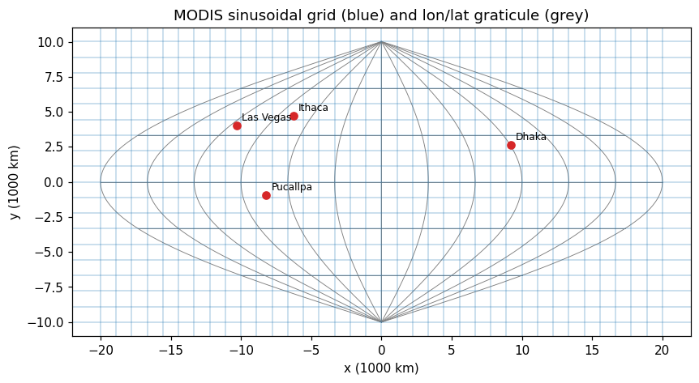
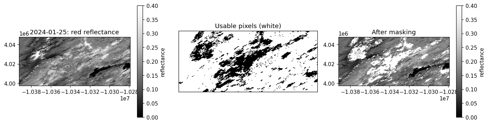
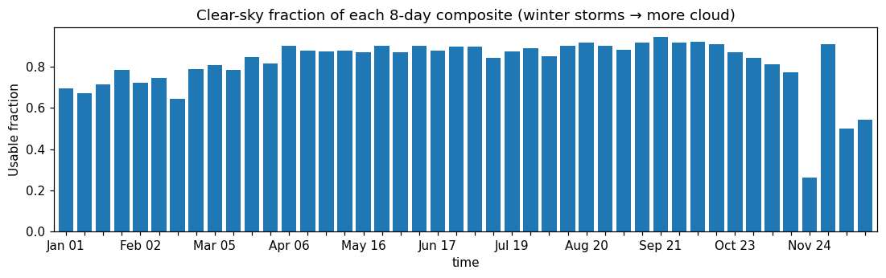
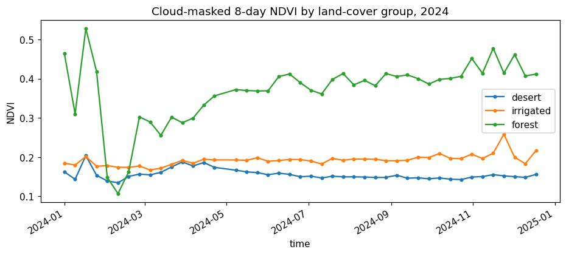
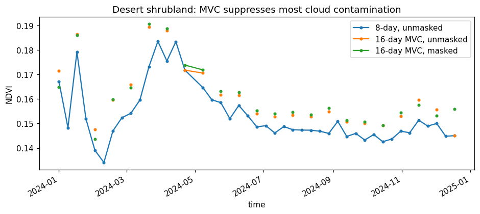
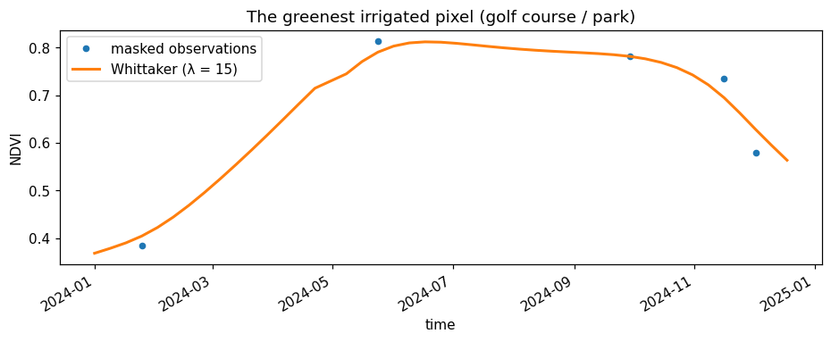
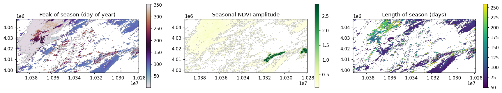
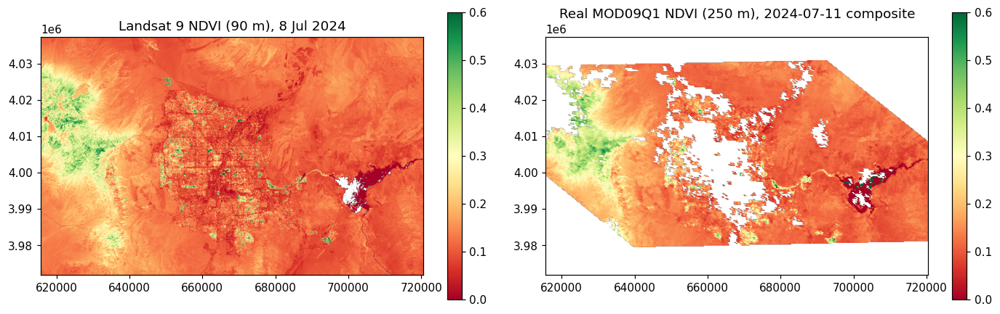
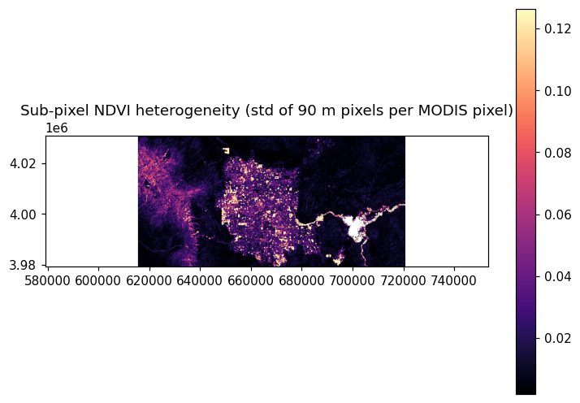
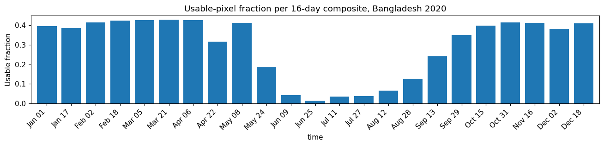

MODIS (Moderate Resolution Imaging Spectroradiometer) is a NASA instrument on Terra (morning orbit, launched December 1999) and Aqua (afternoon orbit, launched May 2002).
Overview
Together they image most of the Earth every one to two days in 36 bands. A MODIS product may be a spectral image or a processed measurement such as a vegetation index, land surface temperature, snow cover or fire. This notebook shows how those products are organised and how to turn them into analysis-ready time series with geolattice.rsense.
Core concepts
Learning objectives
Know the main MODIS products and their spatial/temporal resolutions.
Understand the sinusoidal grid and tile system, and reproject MODIS data correctly.
Apply product scale factors and fill values.
Decode QA bit fields and mask clouds and shadows.
Build vegetation-index time series, maximum-value composites and phenology maps.
Recognise the mixed-pixel problem when comparing MODIS with Landsat.
Mosaic adjacent MODIS tiles, reproject them, clip to a national boundary and store the NDVI cube as Zarr.
Contents
Key characteristics
Spatial resolution
Spectral bands
Products
Product names
Where to get MODIS data
A typical processing workflow
Preprocessing considerations
Applications
Limitations
Data
Setup
The MODIS product family and the sinusoidal grid
Loading real MODIS data
Downloading a year of MODIS data
Scale factors and fill values
Decoding QA bits and masking clouds
Vegetation index time series and maximum-value composites
Smoothing and land surface phenology
MODIS versus Landsat: resolution and mixed pixels
Bangladesh NDWI, 2020
Summary, exercises and references
Key characteristics
Characteristic
Description
Sensor
Moderate Resolution Imaging Spectroradiometer
Satellite platforms
Terra and Aqua
Spectral coverage
36 spectral bands
Wavelength range
Approximately 0.4–14.4 micrometers
Spatial resolution
250 m, 500 m, and 1,000 m, depending on band
Swath width
Approximately 2,330 km
Global coverage
Approximately every 1–2 days, depending on location and product
Historical record
Terra observations from 2000 and Aqua observations from 2002, with product-specific coverage
Main applications
Agriculture, forestry, hydrology, climate, land cover, and disaster monitoring
Spatial resolution
Spatial resolution describes the approximate ground area represented by each pixel.
250 m resolution: Each pixel represents approximately 250 m × 250 m, or 6.25 hectares. Used by selected red and near-infrared bands.
500 m resolution: Each pixel represents approximately 25 hectares. Common for vegetation indices, reflectance, and land-cover products.
1 km resolution: Each pixel represents approximately 100 hectares. Common for land surface temperature and various atmospheric or environmental products.
These are nominal resolutions at or near nadir (directly beneath the satellite). Actual pixel footprints can become larger and more distorted toward the edges of the satellite swath.
Important: A 250 m MODIS image cannot reliably identify individual small fields, wells, or narrow rivers. It is best suited to regional and landscape-scale analysis.
Spectral bands
MODIS measures reflected sunlight and emitted thermal radiation at different wavelengths. These measurements help scientists distinguish vegetation, water, soil, clouds, and other surface or atmospheric features.
The main spectral regions are:
1. Visible light: Approximately 0.4–0.7 µm. Useful for natural-color images, clouds, water bodies, and land-cover patterns.
2. Near-infrared (NIR): Strongly reflected by healthy vegetation. Useful for vegetation monitoring and NDVI calculation.
3. Shortwave infrared (SWIR): Sensitive to vegetation water content, moisture conditions, soil properties, and burned areas.
4. Thermal infrared: Measures emitted radiation used to estimate land surface temperature and detect thermal anomalies.
Bands used for vegetation
MODIS band
Approximate wavelength
Main use
Band 1
0.65 µm
Red reflectance; vegetation indices
Band 2
0.86 µm
Near-infrared; vegetation indices
Band 3
0.47 µm
Blue reflectance; atmospheric correction
Band 4
0.56 µm
Green reflectance; vegetation and water studies
Band 6
1.64 µm
Moisture-sensitive vegetation and surface analysis
Band 7
2.13 µm
Surface and vegetation characterization
Band 31
11.0 µm
Thermal measurements and surface temperature
Band 32
12.0 µm
Thermal measurements and surface temperature
Wavelengths are rounded, and exact band characteristics depend on the sensor specification.
Products
MODIS data are distributed in different scientific products. You should choose a product according to your research objective rather than treating all MODIS images as interchangeable.
A. True-color and surface-reflectance images
These resemble photographs of the Earth’s surface. Surface-reflectance products correct for atmospheric effects and are useful for land-cover mapping, surface characterization, and change detection.
Examples: MOD09, MYD09; MOD02/MYD02 for calibrated radiances.
B. Vegetation index images (NDVI and EVI)
These indicate vegetation greenness and help monitor crop development, vegetation stress, seasonal growth, and ecosystem productivity.
Examples: MOD13Q1 and MYD13Q1 at 250 m, with 16-day composites.
C. Land surface temperature (LST)
Estimates the radiometric temperature of the land surface, which can differ substantially from air temperature. Useful for heat-stress studies, drought assessment, and evapotranspiration modeling.
Examples: MOD11A1 and MYD11A1, daily nominal 1 km products.
D. Land-cover images
Classify pixels into categories such as forest, cropland, grassland, urban areas, and water. Useful for mapping landscape change and studying relationships between land use and environmental conditions.
Example: MCD12Q1, an annual land-cover product at 500 m.
E. Fire and burned-area products
Detect active fire locations and map areas affected by fire. Useful for wildfire monitoring, smoke studies, and ecosystem disturbance assessment.
Examples: MOD14/MYD14 active-fire products and MCD64A1 burned-area product.
F. Evapotranspiration (ET) products
Estimate water transferred from land to the atmosphere through evaporation and plant transpiration. Useful for agricultural water-use assessment, drought analysis, and hydrological modeling.
Example: MOD16A2GF, an 8-day gap-filled ET product at 500 m.
NASA provides the official catalogue of MODIS land, vegetation, temperature, evapotranspiration, fire, and other products.
Product names
MODIS datasets commonly have identifiers such as MOD13Q1, MYD13Q1, and MOD11A1.
Prefix or suffix
Meaning
MOD
Terra MODIS
MYD
Aqua MODIS
MCD
Combined Terra and Aqua product
13
Vegetation-index product family
11
Land surface temperature product family
Q1
Commonly denotes a 250 m, 16-day vegetation-index product in MOD13Q1
A1
Commonly denotes a daily tiled product in identifiers such as MOD11A1
A2
Commonly denotes an 8-day product in identifiers such as MOD16A2
The exact meaning depends on the complete product identifier. The product’s collection version, processing level, and quality flags must also be checked before analysis.
Where to get MODIS data
There are several reliable ways to access MODIS data, depending on whether you need a quick visualization, a research-ready raster, or a long time series.
1. NASA Worldview
Best for viewing satellite imagery, exploring dates, comparing environmental events, and creating visualizations.
Best for processing long MODIS time series, calculating vegetation indices, creating regional composites, and extracting raster values for thousands of locations.
Best for downloading and processing MODIS land products, including surface reflectance, vegetation indices, land cover, temperature, and evapotranspiration.
For large research projects, Google Earth Engine is often convenient because it allows you to process data without downloading every original satellite file. For reproducible local workflows, downloaded products can be processed using Python, R, GDAL, or QGIS.
Instrument specifications and product documentation: NASA MODIS.
A typical processing workflow
A typical workflow looks like this:
Step 1. Define the study area and dates
Country, watershed, agricultural region, or grid
Step 2. Select the MODIS product
NDVI, surface reflectance, LST, ET, or land cover
Step 3. Apply quality control
Screen clouds, invalid pixels, poor retrievals, and fill values
Step 4. Prepare spatial data
Clip, reproject if needed, resample carefully, and align grids
Step 5. Build temporal composites
Daily, 8-day, 16-day, monthly, or seasonal summaries
Step 6. Analyze and validate
Maps, trends, raster statistics, machine learning, or spatiotemporal modeling
Preprocessing considerations
Scale factors: Many MODIS scientific products store integer values that must be multiplied by documented scale factors and adjusted for any specified offsets.
Quality assurance (QA): A pixel’s value alone may not indicate whether the observation is reliable. Inspect the product-specific QA fields.
Cloud contamination: Clouds and cloud shadows can make surface observations unusable.
Temporal compositing: A 16-day product is not equivalent to a daily observation; it summarizes or selects observations over a time window.
Spatial alignment: Use consistent projections, pixel grids, and resolutions when combining MODIS with other satellite products.
Missing observations: Do not automatically replace missing pixels with zero. Use a documented masking, interpolation, or imputation procedure appropriate to the analysis.
Applications
MODIS is particularly useful when environmental variables must be observed repeatedly over large areas. For groundwater research, however, MODIS generally provides indirect indicators of groundwater-related processes, not direct measurements of groundwater levels.
Agricultural monitoring: Use NDVI, EVI, land surface temperature, and evapotranspiration to study crop growth, seasonal patterns, vegetation stress, and irrigation demand.
Drought monitoring: Combine vegetation indices, land surface temperature, precipitation, and evapotranspiration to identify periods of agricultural and environmental water stress.
Hydrological analysis:Use water-related products, ET estimates, land cover, and vegetation observations to investigate water balance, seasonal surface-water dynamics, and land–atmosphere interactions.
Limitations
Limitation
Implication for research
Moderate spatial resolution
Small fields, narrow waterways, and local features may not be resolved reliably.
Clouds and atmospheric effects
Surface observations may be missing or contaminated.
Composite products
A composite may not represent the conditions at a specific day or hour.
Mixed pixels
A single pixel may include several land-cover types.
Retrieval uncertainty
ET and LST estimates have product-specific uncertainties.
Indirect hydrological signals
Vegetation and temperature do not directly measure groundwater depth.
For finer agricultural mapping, Landsat and Sentinel-2 can complement MODIS. For regional groundwater storage changes, GRACE and GRACE-FO provide complementary information, but their spatial resolution is much coarser than a 1 km grid. Ground-based well measurements remain essential for validating groundwater-level forecasts.
Data
Dataset
Source
Role
Real MOD09Q1 surface reflectance, 8-day, 250 m, tile h08v05, 2024
Microsoft Planetary Computer, downloaded live in Downloading a year of MODIS data with geolattice.rsense.get_images
Executed analysis, from the download through the mixed-pixel comparison
Landsat 9 C2 L2 surface reflectance, 8 July 2024, Las Vegas (90 m, 7 bands)
Real scene, used to locate example pixels and for the resolution comparison
Executed analysis
NLCD 2021 land cover (30 m, resampled to the MODIS grid)
USGS, via the cloud-optimised national mosaic
Groups MODIS pixels by land-cover type
Terra MOD09Q1, tiles h25v06 and h26v06, 2020–2024
Microsoft Planetary Computer, downloaded in Bangladesh NDWI, 2020
Bangladesh NDVI cube
Bangladesh county boundaries and BUTM projection
Data/00_shared/data_geostatistics/BD_Banladesh_BUTM.shp and .prj
Clip and reprojection target
This notebook downloads real data.Downloading a year of MODIS data calls geolattice.rsense.get_images to pull every 2024 MOD09Q1 composite over Las Vegas straight from Microsoft Planetary Computer (no account needed) — about 44 real eight-day composites, roughly 130 small GeoTIFFs. Everything after that — scaling, QA masking, indices, smoothing, phenology, mixed pixels — runs on those real pixels, clouds and all. It needs internet; ONLINE (set in Setup) reports whether the catalogue is reachable.
Setup
Installation. This notebook needs installation option 5 (core, spatial analysis, spatial statistics, geostatistics and remote sensing): pip install "geolattice[remote-sensing]". See “Installation options” in the GeoLattice README.
Code
import warningswarnings.filterwarnings("ignore", category=UserWarning)warnings.filterwarnings("ignore", category=RuntimeWarning)import jsonimport numpy as npimport pandas as pdimport xarray as xrimport rasterioimport matplotlib.pyplot as pltfrom pyproj import Transformerimport geolattice.rsense as rsfrom geolattice.rsense.optical.sensors import modisfrom geolattice.rsense.get_images import get_images, search_imagesfrom geolattice.network import is_onlinerasterio.Env(CPL_LOG="/dev/null").__enter__()plt.rcParams.update({"figure.dpi": 110})ONLINE = is_online("https://planetarycomputer.microsoft.com/api/stac/v1")# "cpu" keeps this notebook's land-cover/group arrays (plain numpy) and MODIS data on the# same backend; "auto" would move MODIS data to the GPU on a CUDA machine and break code# below that mixes it with plain numpy arrays.print("geolattice.rsense", rs.__version__, "| backend:", rs.set_backend("cpu"),"| Planetary Computer reachable:", ONLINE)
geolattice.rsense 0.2.0.dev0 | backend: cpu | Planetary Computer reachable: True
Code
# This section defines helper functions and data references for working with remote sensing tutorial data.## 1. It creates a local "data" directory if it doesn't exist.# 2. Sets up URL patterns for accessing remote files, including GitHub and SentinelHub repositories.# 3. Builds a dictionary (URLS) mapping friendly filenames (e.g. "landsat_las_vegas.tif") to their remote download locations.# - The dictionary covers diverse datasets, including Landsat, ECOSTRESS, and Sentinel-2 example scenes.# 4. Defines `fetch(name)`:# - Checks if a file exists locally; if not, downloads it from the relevant URL and stores it in "data/".# - Returns a Path object to the local file.# 5. Sets up a download link and a color-class dictionary for the 2021 National Land Cover Dataset (NLCD).# 6. Defines `nlcd_for(template, name="nlcd_window")`:# - Downloads and resamples only the window of NLCD data matching the spatial extent and CRS of a provided xarray DataArray/template.# - Uses cloud-optimized GeoTIFF and cloud-native rasterio/rioxarray access for efficiency.# - Caches the resampled tile locally, and forces output type/int16 and nodata convention.# This section is about getting and managing example remote sensing data files, and making a utility for quick access/cropping with land cover maps (NLCD).# It's designed to make it easy to download and use standard raster files for the tutorial, even if they're big, and to let you work with just the window you need.from pathlib import Path # Lets you handle files & folders nicelyimport urllib.request # Lets you download files from the internetDATA = Path("../../../../Data/08_remote_sensing/08_02_optical") # Define a folder called 'data' to keep everything organizedDATA.mkdir(exist_ok=True) # Make the folder if it isn't already there# These are base URLs to datasets used in this tutorial:GH ="https://github.com/opengeos/datasets/releases/download"# Used for hosting big downloadable data files (GeoTIFF, etc.)RAW ="https://raw.githubusercontent.com"# Used for direct file access from GitHub repositoriesEOP =f"{RAW}/sentinel-hub/eo-learn/develop/example_data/TestEOPatch"# A specific base for SentinelHub's eo-learn tutorial dataset# This dictionary links short, friendly filenames (what you'll use locally) to their online location# That way, you just refer to (for example) "landsat_las_vegas.tif", and the code knows where to find and download it.URLS = {# Example: Las Vegas, from Landsat 9 (July 2024). 90m resolution, 7 bands."landsat_las_vegas.tif": f"{GH}/raster/landsat_las_vegas.tif",# Example: Peru, every 5 years from 1985 to 2020. Landsat composites as small TIFFs.**{f"pucallpa_{y}.tif": f"{RAW}/opengeos/data/main/landsat/{y}.tif"for y inrange(1985, 2021, 5)},# Example: ECOSTRESS land surface temperature, SoCal, April 2023."ecostress_lst.tif": f"{GH}/raster/ECOv002_L2T_LSTE_26860_001_10SGD_20230401T203733_0710_01_LST.tif",# Example: Central Sierra Nevada Landsat 7 + a Digital Elevation Model (DEM)"landsat.tif": f"{GH}/raster/landsat.tif","dem_90m.tif": f"{GH}/book/dem_90m.tif",# A sample COG (cloud-optimized GeoTIFF)"cog.tif": f"{GH}/raster/cog.tif",# Sentinel-2 southern Slovenia time series (eo-learn test eopatch)"s2_bands.npy": f"{EOP}/data/BANDS-S2-L1C.npy","s2_clp.npy": f"{EOP}/data/CLP.npy","s2_clm.npy": f"{EOP}/mask/CLM.npy","s2_lulc.npy": f"{EOP}/mask_timeless/LULC.npy","s2_dem.npy": f"{EOP}/data_timeless/DEM.npy","s2_timestamps.json": f"{EOP}/timestamps.json","s2_bbox.geojson": f"{EOP}/bbox.geojson",}def fetch(name):""" Download a file by its nickname if it isn't already stored locally and return the local path. This makes sure you never download anything twice, and you just call fetch("landsat.tif") and get the data, guaranteed! """ path = DATA / nameifnot path.exists():print(f"Downloading {name} ...") # Let the user know what's happening urllib.request.urlretrieve(URLS[name], path) # Fetch it!return path # Return the ready-to-use file path# -- NLCD (National Land Cover Database) info# This is a U.S.-wide map where every pixel is a land cover class code:NLCD_URL =f"{GH}/raster/nlcd_2021_land_cover_90m.tif"# Each land cover code means a category, with a readable name and a color (for plots)NLCD_CLASSES = {11: ("Open water", "#466b9f"), 21: ("Developed, open", "#dec5c5"),22: ("Developed, low", "#d99282"), 23: ("Developed, medium", "#eb0000"),24: ("Developed, high", "#ab0000"), 31: ("Barren", "#b3ac9f"),41: ("Deciduous forest", "#68ab5f"), 42: ("Evergreen forest", "#1c5f2c"),43: ("Mixed forest", "#b5c58f"), 52: ("Shrub/scrub", "#ccb879"),71: ("Grassland", "#dfdfc2"), 81: ("Pasture/hay", "#dcd939"),82: ("Cultivated crops", "#ab6c28"), 90: ("Woody wetlands", "#b8d9eb"),95: ("Herbaceous wetlands", "#6c9fb8")}def nlcd_for(template, name="nlcd_window"):""" For dummies: Give me land cover data that matches my area of interest/grid! What this does: - Given ANY xarray/raster 'template' (with bounds, res, projection), - Clips just the part of the big NLCD raster covering that extent (using HTTP, so it's fast even for huge rasters), - Reprojects it (warps to template's pixel size & projection, using nearest neighbor so codes stay codes), - Saves a window of that data locally (so next time it's instant), - Returns an xarray DataArray matching your template, with INT16 type and zero for no data (background). This is very efficient, so you can overlay NLCD with any other product easily. """from rasterio.enums import Resampling cache = DATA /f"{name}.tif"ifnot cache.exists():# Only do the heavy lifting when the file isn't already readyimport rasterio, rioxarrayfrom rasterio.warp import transform_bounds# The VSICURL trick lets rasterio/rioxarray read just what we want from a giant cloud-hosted TIFFwith rasterio.Env(GDAL_DISABLE_READDIR_ON_OPEN="EMPTY_DIR"):# Open remote NLCD raster (no download) src = rioxarray.open_rasterio("/vsicurl/"+ NLCD_URL)# Figure out what portion we need (matching the template's bbox, but transformed to the NLCD's CRS) b = transform_bounds(template.rio.crs, src.rio.crs, *template.rio.bounds())# Extract just that box, drop band dimension, load the data into memory win = src.rio.clip_box(*b).squeeze("band", drop=True).load()# Write the window to disk for future re-use (as a normal file) rs.write(win, cache, cog=False)# Now read that local tile (quick, masked=False disables masked arrays) win = rs.read(cache, masked=False).squeeze("band", drop=True).rio.write_nodata(0)# Warp (resample/reproject) to match the template's pixel arrangement (nearest neighbor preserves codes, no interpolation) out = win.rio.reproject_match(template, resampling=Resampling.nearest, nodata=0)# Make sure the result is a normal integer array (no floats!), all no-data is 0, and returnreturn out.astype("int16").rio.write_nodata(0)
The MODIS product family and the sinusoidal grid
MODIS data are distributed as products: geophysical variables at a fixed resolution and compositing period. Product names encode the platform (MOD = Terra, MYD = Aqua, MCD = combined), the product number, and the collection (currently 061).
Code
# This code creates a DataFrame listing important MODIS remote sensing products, their main variables, spatial resolution, and temporal period.# Each row in the DataFrame represents a MODIS product and includes:# - The product short name (e.g., MOD09GA)# - A description of the variable(s) in that product# - The native spatial resolution (e.g., 500 m, 1 km)# - The compositing period (e.g., daily, 16-day)products = pd.DataFrame([ ("MOD09GA", "Surface reflectance, bands 1-7", "500 m (b1-2 also 250 m)", "Daily"), ("MOD09A1", "Surface reflectance, best pixel", "500 m", "8-day"), ("MOD13Q1", "NDVI / EVI", "250 m", "16-day"), ("MOD11A1", "Land surface temperature & emissivity", "1 km", "Daily (day & night)"), ("MOD11A2", "Land surface temperature", "1 km", "8-day"), ("MOD15A2H", "Leaf area index / FPAR", "500 m", "8-day"), ("MOD17A2H", "Gross primary productivity", "500 m", "8-day"), ("MCD12Q1", "Land cover type (IGBP etc.)", "500 m", "Yearly"), ("MCD64A1", "Burned area", "500 m", "Monthly"), ("MOD10A1", "Snow cover", "500 m", "Daily"),], columns=["Product", "Variable", "Resolution", "Period"])products
Product
Variable
Resolution
Period
0
MOD09GA
Surface reflectance, bands 1-7
500 m (b1-2 also 250 m)
Daily
1
MOD09A1
Surface reflectance, best pixel
500 m
8-day
2
MOD13Q1
NDVI / EVI
250 m
16-day
3
MOD11A1
Land surface temperature & emissivity
1 km
Daily (day & night)
4
MOD11A2
Land surface temperature
1 km
8-day
5
MOD15A2H
Leaf area index / FPAR
500 m
8-day
6
MOD17A2H
Gross primary productivity
500 m
8-day
7
MCD12Q1
Land cover type (IGBP etc.)
500 m
Yearly
8
MCD64A1
Burned area
500 m
Monthly
9
MOD10A1
Snow cover
500 m
Daily
MODIS land products use a sinusoidal (equal-area) projection on a sphere of radius 6,371,007.181 m, cut into 36 × 18 tiles of 1,111,950.5 m. Tiles are labelled hXXvYY (h = 0-35 west to east, v = 0-17 north to south). Equal area is ideal for statistics, but the grid is heavily sheared away from the central meridian, so we reproject before overlaying other data. Let’s find the tile for a few places.
Code
# This code shows how to find the MODIS tile and projection coordinates for any location.# MODIS uses a weird "sinusoidal" map projection that chops the earth into 36 (wide) x 18 (high) rectangles, each 1,111,950.52 meters across.# We'll need to convert lon/lat (the usual coordinates) into this sinusoidal system to find where places land on the MODIS grid.# Save a string describing the MODIS sinusoidal projection.SIN = modis.SINUSOIDAL_WKT # (Just a technical detail: this is a WKT string, used by mapping software.)# The size of each MODIS tile (in meters).TILE =1_111_950.5197# Set up a converter for (longitude/latitude) → (sinusoidal x/y, in meters).to_sin = Transformer.from_crs("EPSG:4326", SIN, always_xy=True)# This function tells you two things for any lon/lat:# - The tile name (like h12v04, where h is the horizontal grid and v is vertical)# - The exact x and y in sinusoidal meters, roundeddef modis_tile(lon, lat): x, y = to_sin.transform(lon, lat) # Convert (lon,lat) to sinusoidal (x,y)# Calculate "h" and "v" tile indices according to MODIS tile math. h =int((x +18* TILE) // TILE) # how far right (0 to 35) v =int((9* TILE - y) // TILE) # how far down (0 to 17)returnf"h{h:02d}v{v:02d}", round(x), round(y)# Let's try some actual places (longitude, latitude):places = {"Las Vegas, USA": (-115.15, 36.17),"Ithaca, USA": (-76.50, 42.44),"Dhaka, Bangladesh": (90.41, 23.81),"Pucallpa, Peru": (-74.55, -8.38)}# For each place, look up its MODIS tile and (x, y) coordinates, and show in a table.pd.DataFrame( [(name, *modis_tile(*ll)) for name, ll in places.items()], columns=["Place", "Tile", "Sinusoidal x (m)", "Sinusoidal y (m)"])
Place
Tile
Sinusoidal x (m)
Sinusoidal y (m)
0
Las Vegas, USA
h08v05
-10336367
4021925
1
Ithaca, USA
h12v04
-6277606
4719118
2
Dhaka, Bangladesh
h26v06
9197514
2647554
3
Pucallpa, Peru
h10v09
-8201085
-931815
Code
# The following code block visualizes how lines of constant longitude/latitude ("graticule") appear when projected# into the MODIS sinusoidal projection, and overlays the MODIS tile grid. This shows the strong distortion/shear# introduced by the projection, especially at high longitudes.fig, ax = plt.subplots(figsize=(9, 4.5)) # Create a wide figure for the map# Draw lines of constant longitude, sweeping through all latitudes.for lon inrange(-180, 181, 30): lat = np.linspace(-90, 90, 181) # 181 steps from -90 to +90 x, y = to_sin.transform(np.full_like(lat, lon), lat) # Project into sinusoidal x/y ax.plot(np.array(x) /1e6, np.array(y) /1e6, color="grey", lw=0.6) # Plot as thin grey line# Draw lines of constant latitude, sweeping through all longitudes.for lat inrange(-90, 91, 30): lon = np.linspace(-180, 180, 361) # 361 steps from -180 to +180 x, y = to_sin.transform(lon, np.full_like(lon, lat)) # Project into sinusoidal x/y ax.plot(np.array(x) /1e6, np.array(y) /1e6, color="grey", lw=0.6) # Plot as thin grey line# Draw the MODIS tile grid as blue lines.for k inrange(37):# Vertical gridlines: shift by k in tile index, center is at h=18 ax.axvline((k -18) * TILE /1e6, color="C0", lw=0.3)for k inrange(19):# Horizontal gridlines: v=9 is middle row ax.axhline((9- k) * TILE /1e6, color="C0", lw=0.3)# Plot locations of a few example places as red markers with labels.for p, ll in places.items(): x, y = to_sin.transform(*ll) ax.plot(x /1e6, y /1e6, "o", color="C3") # Plot the point ax.annotate(p.split(",")[0], (x /1e6, y /1e6), xytext=(4, 4), textcoords="offset points", fontsize=8) # Add place name# Set axis labels and plot title; set equal scaling; display the plotax.set(xlabel="x (1000 km)", ylabel="y (1000 km)", title="MODIS sinusoidal grid (blue) and lon/lat graticule (grey)")ax.set_aspect("equal")plt.show()

Loading real MODIS data
geolattice.rsense has three ways to get real MODIS pixels, and this notebook ends up using all three somewhere below:
geolattice.rsense.get_images — searches a STAC catalogue (Microsoft Planetary Computer, no account needed) and downloads just the bands you ask for as small, AOI-clipped GeoTIFFs. This is the route Downloading a year of MODIS data uses to build the whole 2024 time series analysed in the rest of this notebook.
rs.optical.load_modis — reads MOD09A1 (500 m) as a lazy, cloud-optimised cube with no files to manage; already scaled and cloud-masked. Needs the optional odc-stac package.
NASA Earthdata (earthaccess) — every MODIS product as HDF4 granules, which rs.core.read_hdf opens layer by layer. Needs a free Earthdata login.
The cell below tries routes 2 and 3 just to show the API, and reports clearly when an optional package or login is missing rather than failing the notebook — that section’s get_images download needs neither.
Code
# Define the area we want data for: here, Las Vegas valley, using its longitude and latitude boundsAOI = (-115.45, 35.95, -114.85, 36.40) # AOI = Area Of Interestif ONLINE: # If we have internet connection, try to download some sample MODIS data in 2 ways# First way: Try to use a function that fetches MODIS data in a ready-to-use format (needs a special package)try: mod_lazy = rs.optical.load_modis(AOI, ("2024-06-01", "2024-06-10"), mask=True)print(mod_lazy) # Print a summary of what we got (an xarray object)exceptImportErroras exc:# If the needed package isn't installed, let the user knowprint("load_modis needs an optional dependency:", exc)# Second way: Get data directly from NASA's Earthdata archive, in HDF format (needs a free account)try:# Search for some data files (granules) from NASA Earthdata that match our area and dates granules = rs.access.earthdata_search("MOD13Q1", aoi=AOI, dates=("2024-06-01", "2024-06-30"))# Download the first file we found to a local folder files = rs.access.earthdata_download(granules[:1], "../../../../Data/08_remote_sensing/08_02_optical/modis")# Show what layers are inside that downloaded fileprint(rs.core.read_hdf(files[0])) # This prints a dictionary of all the data layers# Read the NDVI (vegetation index) layer from the file ndvi = rs.core.read_hdf(files[0], "250m 16 days NDVI")# Fix the values using the right scale for this product ndvi = modis.scale_product(ndvi, "MOD13", "NDVI", fill=-3000)exceptExceptionas exc:# If anything goes wrong (like missing login or package), tell the user that's why this part is skippedprint("NASA Earthdata route skipped (needs earthaccess + a free login):", exc)else:# If we don't have internet, just tell the user we're skipping this demoprint("Offline: skipping the live demo routes. The download section needs internet to continue.")
load_modis needs an optional dependency: odc.stac is required; install with `pip install geolattice[rsense-access]`
NASA Earthdata route skipped (needs earthaccess + a free login): earthaccess is required; install with `pip install geolattice[rsense-access]`
Downloading a year of MODIS data
geolattice.rsense.get_images searches Microsoft Planetary Computer and downloads MOD09Q1 — NASA’s 8-day, 250 m surface reflectance composite — for the Las Vegas valley. Terra (MOD) and Aqua (MYD) both publish this product; we keep Terra only, so composites fall 8 days apart just as rs.optical.load_modis would return for MOD09A1. Only red and nir are measured at 250 m (MOD09’s other bands are 500 m or 1 km), which is enough for NDVI, QA decoding and the resolution comparison in MODIS versus Landsat: resolution and mixed pixels.
Code
# Read the Landsat image with its spectral bands, as labeled for common usels = rs.read( fetch("landsat_las_vegas.tif"), band_names=["coastal", "blue", "green", "red", "nir", "swir16", "swir22"])# Mask out any invalid or non-positive reflectance values in the Landsat datals = ls.where(ls >0)# Derive a land cover classification for the area, using the first Landsat band as a template gridlandcover = nlcd_for(ls.isel(band=0))# Print the shape/size of the Landsat data and the list of NLCD land cover classes present in the areaprint("Landsat:", dict(ls.sizes),"| NLCD classes present:", sorted(np.unique(landcover.values).tolist()))
# Search Planetary Computer for every MOD09Q1 composite over the AOI in 2024, then download# red, nir and the state QA band as AOI-clipped GeoTIFFs with get_images.# The item id encodes platform (MOD = Terra, MYD = Aqua) and acquisition day-of-year# ("A2024129" = day 129 of 2024); keep Terra only, and the newest processing run per date# (Planetary Computer sometimes carries two runs of the same granule).OUT = DATA /"modis_2024"# Let's fetch MODIS satellite images for our area of interest (Las Vegas valley) for the year 2024.# We want NASA's Terra MODIS 8-day surface reflectance products ("MOD09Q1").# Step 1: Search for available images ("items") in Microsoft's Planetary Computerfound = search_images( bbox=AOI, # The geographical area we're interested in dates=("2024-01-01", "2024-12-31"), # We want all scenes in 2024 source="planetary", # Search the Microsoft Planetary Computer collection="modis-09Q1-061", # Specify the MODIS product version limit=150, # Don't return more than 150 results (plenty for 8-day in 1 yr) quiet=True, # Don't print progress messages)# Step 2: Of the found images, keep only the latest version for each 8-day period (sometimes there are duplicates)latest = {}for item in found.items:# Only consider Terra MODIS images for 2024 that have IDs like "MOD09Q1.A2024xxxx"ifnot item.id.startswith("MOD09Q1.A2024"):continue# Extract the date code (e.g. "A2024129" for day 129 of 2024) acq = item.id.split(".")[1]# Save the newest image for each date (sometimes there are two processing runs for the same day)if acq notin latest or item.id> latest[acq]: latest[acq] = item.id# Gather the IDs, sorted in time orderterra_ids =sorted(latest.values())# Step 3: Download the images!# For each of these IDs, download the Red, NIR, and QA ("state") bands, clipped to our area of interest.saved = get_images( OUT, # The folder where to save images search=found, # The search result object (so get_images can find the files) ids=terra_ids, # The scene IDs to actually download bands=["red", "nir", "state"], # Only get the needed bands (Red/NIR for NDVI + QA band) mode="clip", # Crop images to exactly the AOI quiet=True, # Hide extra output)print(saved) # Print summary of what was downloaded and where
44 scene(s), 0 band file(s) to fetch, 132 already present
# Assemble the downloaded scenes into one xarray.Dataset with the variable names MOD09# products use. Two scene folders can share a date when the catalogue carries more than one# processing run for a granule; sorting folders by name and keeping the last one per date keeps# the newer run (its id, and so its folder name, sorts after the older one).# We have a folder ("saved.out") that contains subfolders. Each subfolder is a "scene" (= one MODIS image for a date).# Our goal: build a time series of MODIS images, stacking up Red, NIR, and "state" for each day we have.# Step 1: For each scene subfolder, get its acquisition date, and keep only the latest for each dateby_date = {}for scene_dir insorted(p for p in saved.out.iterdir() if p.is_dir()):# The metadata about this image is stored in item.json. We read it in. item = json.loads((scene_dir /"item.json").read_text())# Use the "datetime" field (YYYY-MM-DD format, only the date part) date = item["properties"]["datetime"][:10] by_date[date] = scene_dir # If there are several for same day, only the "latest" (sorted last) remains# Step 2: Sort all the dates so they're in time order, then turn into pandas datetime objectsdates = pd.to_datetime(sorted(by_date))# Step 3: For each date, collect the Red, NIR, and State images from the corresponding folderred, nir, state = [], [], []for day in dates: scene_dir = by_date[day.strftime("%Y-%m-%d")]# Read the "red" band from red.tif for this day. Take out the band dimension—it has only one band. red.append(rs.read(scene_dir /"red.tif").squeeze("band", drop=True)) nir.append(rs.read(scene_dir /"nir.tif").squeeze("band", drop=True))# The state band is a little special—we don't mask it, just read as-is (QA info) state.append(rs.read(scene_dir /"state.tif", masked=False).squeeze("band", drop=True))# Step 4: Stack up all the images in timemod = xr.Dataset({"sur_refl_b01": xr.concat(red, dim="time"), # Red band over time"sur_refl_b02": xr.concat(nir, dim="time"), # NIR band over time# The state QA band, bit flags showing cloud/quality info. 250m, same as data bands."sur_refl_state_500m": xr.concat(state, dim="time"),}).assign_coords(time=("time", dates))# Attach coordinate reference system info—use same as in red band (they all match)mod = mod.rio.write_crs(red[0].rio.crs)# Add an attribute clarifying that this is MODIS datamod.attrs["geolattice.rsense:sensor"] ="modis"# For convenience, get day-of-year values for each time slice, so we can plot by calendar laterdoy = mod.time.dt.dayofyear.values# Print out size info and time coverageprint("MODIS grid:", dict(mod.sizes), "| resolution:", round(abs(mod.rio.resolution()[0]), 2), "m")print("Composites:", len(mod.time), "from", str(mod.time.values[0])[:10], "to", str(mod.time.values[-1])[:10])# The dataset is ready! All further analysis works with "mod".mod
MODIS grid: {'x': 489, 'y': 217, 'time': 44} | resolution: 231.66 m
Composites: 44 from 2024-01-01 to 2024-12-18
<xarray.Dataset> Size: 47MB
Dimensions: (x: 489, y: 217, time: 44)
Coordinates:
* x (x) float64 4kB -1.039e+07 -1.039e+07 ... -1.028e+07
* y (y) float64 2kB 4.048e+06 4.047e+06 ... 3.998e+06
* time (time) datetime64[ns] 352B 2024-01-01 ... 2024-12-18
spatial_ref int64 8B 0
Data variables:
sur_refl_b01 (time, y, x) float32 19MB 1.096e+03 ... 1.708e+03
sur_refl_b02 (time, y, x) float32 19MB 1.528e+03 ... 2.161e+03
sur_refl_state_500m (time, y, x) uint16 9MB 72 72 72 72 72 ... 72 72 72 72
Attributes:
geolattice.rsense:sensor: modis
PROJCS["unnamed",GEOGCS["Unknown datum based upon the custom spheroid",DATUM["Not specified (based on custom spheroid)",SPHEROID["Custom spheroid",6371007.181,0]],PRIMEM["Greenwich",0],UNIT["degree",0.0174532925199433,AUTHORITY["EPSG","9122"]]],PROJECTION["Sinusoidal"],PARAMETER["longitude_of_center",0],PARAMETER["false_easting",0],PARAMETER["false_northing",0],UNIT["metre",1,AUTHORITY["EPSG","9001"]],AXIS["Easting",EAST],AXIS["Northing",NORTH]]
semi_major_axis :
6371007.181
semi_minor_axis :
6371007.181
inverse_flattening :
0.0
reference_ellipsoid_name :
Custom spheroid
longitude_of_prime_meridian :
0.0
prime_meridian_name :
Greenwich
geographic_crs_name :
Unknown datum based upon the custom spheroid
horizontal_datum_name :
Not specified (based on custom spheroid)
projected_crs_name :
unnamed
grid_mapping_name :
sinusoidal
longitude_of_projection_origin :
0.0
false_easting :
0.0
false_northing :
0.0
spatial_ref :
PROJCS["unnamed",GEOGCS["Unknown datum based upon the custom spheroid",DATUM["Not specified (based on custom spheroid)",SPHEROID["Custom spheroid",6371007.181,0]],PRIMEM["Greenwich",0],UNIT["degree",0.0174532925199433,AUTHORITY["EPSG","9122"]]],PROJECTION["Sinusoidal"],PARAMETER["longitude_of_center",0],PARAMETER["false_easting",0],PARAMETER["false_northing",0],UNIT["metre",1,AUTHORITY["EPSG","9001"]],AXIS["Easting",EAST],AXIS["Northing",NORTH]]
# Let's assign each MODIS grid pixel a land cover group so we can compare NDVI by land type.# We'll use the landcover raster, but first reproject it so it aligns (matches grid and size) with our MODIS data.from rasterio.enums import Resampling# Get a template--the spatial shape and transform--from the first time slice of MODIS red band.tpl = mod["sur_refl_b01"].isel(time=0)# Reproject the landcover raster ("lc") so its grid matches "tpl".# "Resampling.mode" is used because landcover is categorical data (we want the most common value, not an average).lc = landcover.rio.reproject_match(tpl, resampling=Resampling.mode)# We'll make an array called "group" the same shape as the MODIS grid, starting with everything as "static".group = np.full(lc.shape, "static", dtype=object)# Now, classify pixels by their land cover code:# Landcover values 31, 52, 71 represent desert/shrubland/grassland. We'll label as "desert".group[np.isin(lc.values, [31, 52, 71])] ="desert"# Landcover values 21, 22, 81, 82, 90, 95 are crops, pasture, and wetlands ("irrigated").group[np.isin(lc.values, [21, 22, 81, 82, 90, 95])] ="irrigated"# Landcover values 41, 42, 43 cover forests (deciduous, evergreen, mixed).group[np.isin(lc.values, [41, 42, 43])] ="forest"# Print the number of MODIS pixels for each group type (shows "desert", "irrigated", "forest", "static").print("MODIS pixels per group:", {g: int((group == g).sum()) for g in ["desert", "irrigated", "forest", "static"]})
MODIS pixels per group: {'desert': 61138, 'irrigated': 3117, 'forest': 5740, 'static': 36118}
This is the real product: sur_refl_b01/sur_refl_b02 are int16 digital numbers with MOD09’s fill value (-28672), and sur_refl_state_500m carries its real QA bit pattern (same layout as the 500 m/1 km state layers, just at 250 m here). Nothing below is simulated — the sections from scale factors through the mixed-pixel comparison run on these pixels exactly as downloaded, clouds and all.
Scale factors and fill values
MODIS reflectance data is stored as 16-bit integer values called digital numbers (DN), which need to be converted to physically meaningful reflectance values. The conversion is performed using a scale factor. For MODIS surface reflectance bands, the formula is: reflectance = DN × 0.0001
Special values are used to indicate missing or invalid data. The value -28672 is reserved as the “fill value,” representing areas where data is missing or invalid. Valid DN values for reflectance data typically range from −100 to 16,000. Values outside this range are generally considered invalid.
Different MODIS products and science datasets use their own scale factors depending on the measurement: - Land Surface Temperature (LST): multiply DN by 0.02 to get Kelvin (DN × 0.02 K) - Normalized Difference Vegetation Index (NDVI): DN × 0.0001 - Leaf Area Index (LAI): DN × 0.1 These scale factors and their corresponding offsets for various products and layers are collected in modis.PRODUCT_SCALES.
To automate this process, you can use rs.optical.scale, which: - looks up the correct scale and offset for each band, - masks out fill values (-28672) and out-of-range data, - and leaves quality assurance (QA) layers untouched (since they aren’t physically measured quantities).
Applying the proper scale and masking ensures that further analyses are done using real, physically-meaningful reflectance data instead of the raw integer codes.
Code
# This line takes our MODIS satellite data and turns its raw numbers ("digital numbers" or DN) # into actual reflectance values (real physical meaning) using the built-in scaling rules.refl = rs.optical.scale(mod) # It figures out the sensor type from the band names automatically.# These are the specific bands we care about: Band 1 (red) and Band 2 (near infrared) from the MOD09Q1 product.bands = ["sur_refl_b01", "sur_refl_b02"]# Let's pick the pixel that sits right in the middle of our image/time-stack for a quick check.px =dict( time=len(mod.time) //2, # halfway through all the dates y=mod.sizes["y"] //2, # halfway down the image x=mod.sizes["x"] //2# halfway across the image)# Now, we're making a little table for those two bands showing:# - the original DN value (raw MODIS output)# - and the reflectance, which is DN scaled properly (actual reflectance, between e.g. 0 and 1)pd.DataFrame({"DN": [int(mod[b].isel(px)) for b in bands],"reflectance": [round(float(refl[b].isel(px)), 4) for b in bands]}, index=bands)
DN
reflectance
sur_refl_b01
2272
0.2272
sur_refl_b02
2486
0.2486
Code
pd.DataFrame([(p, layer, s, o) for p, d in modis.PRODUCT_SCALES.items() for layer, (s, o) in d.items()], columns=["Product", "Layer", "Scale", "Offset"])
Product
Layer
Scale
Offset
0
MOD09
sur_refl
0.0001
0.00
1
MOD13
NDVI
0.0001
0.00
2
MOD13
EVI
0.0001
0.00
3
MOD11
LST_Day_1km
0.0200
0.00
4
MOD11
LST_Night_1km
0.0200
0.00
5
MOD11
Emis_31
0.0020
0.49
6
MOD11
Emis_32
0.0020
0.49
7
MOD15
Lai_500m
0.1000
0.00
8
MOD15
Fpar_500m
0.0100
0.00
9
MOD17
Gpp_500m
0.0001
0.00
Code
# Let's see how to convert raw MODIS numbers into real temperatures:# Imagine you get a list of numbers from the satellite—these aren't temperatures yet, they're just "codes" (called DNs).# For MODIS LST (Land Surface Temperature) from the MOD11 product, you turn the code into degrees Kelvin by multiplying by 0.02.# We'll make a fake list of 4 pixel values. One of them (0) is actually a special value that means "no data" and should become "NaN" (not a number).lst_dn = xr.DataArray(np.array([0, 14800, 15250, 16000]), dims="pixel")# This line magically converts those codes into real temperatures (in Kelvin) for each pixel.print("LST (K):", modis.scale_product(lst_dn, "MOD11", "LST_Day_1km").values) # 0 is fill → NaN
LST (K): [ nan 296. 305. 320.]
Decoding QA bits and masking clouds
MODIS surface reflectance quality (QA) information is stored compactly within the bits of the sur_refl_state_500m integer array. Each bit or set of bits encodes whether specific pixel conditions like cloud, shadow, or snow are present.
Detailed breakdown for the MOD09 state_500m QA band:
Bit Positions
Field Name
Encoded Values (as bits and meaning)
0-1
Cloud state
00: clear, 01: cloudy, 10: mixed, 11: not set
2
Cloud shadow
0: no shadow, 1: shadow present
8-9
Cirrus
00: none, 01: small, 10: average, 11: high cirrus presence
10
Internal cloud algorithm
0: cloud not detected, 1: cloud detected by internal cloud algorithm
13
Adjacent to cloud
0: no, 1: adjacent to cloud
15
Internal snow mask
0: not snow, 1: snow present
This organization allows efficient storage and extraction of QA features. To interpret the bits: - You can extract any of these fields from the QA layer by using: rs.optical.decode_bits(qa, start, length), where start is the starting bit position and length is the number of bits in the field. For instance, to obtain the cloud state for all pixels: rs.optical.decode_bits(qa, 0, 2). - For common masking tasks (e.g., isolating high-quality, “usable” pixels), the convenience function modis_state_mask combines tests for cloud, shadow, and other relevant bits into a single boolean mask. This mask can then be used to remove problematic pixels from further analysis.
Code
# Extract the QA (Quality Assurance) layer for a single time step (here, the 4th composite, since Python uses zero-based indexing).qa = mod["sur_refl_state_500m"].isel(time=3)# Decode selected QA bit fields for every pixel:# - cloud_state: uses bits 0-1 (2 bits) to indicate clear, cloudy, mixed, etc.# - shadow: uses bit 2 to indicate whether cloud shadow is present.# - internal_cloud: uses bit 10 to indicate if MODIS' internal cloud algorithm marks the pixel as cloudy.fields = pd.DataFrame({"cloud_state": rs.optical.decode_bits(qa, 0, 2).values.ravel(),"shadow": rs.optical.decode_bits(qa, 2).values.ravel(),"internal_cloud": rs.optical.decode_bits(qa, 10).values.ravel(),})# Count all unique combinations of these QA classes to see how many pixels fall into each category.fields.value_counts().rename("pixels").reset_index()
cloud_state
shadow
internal_cloud
pixels
0
0
0
0
83189
1
1
0
0
6620
2
2
0
0
5520
3
0
0
1
5116
4
0
1
0
2452
5
2
0
1
1930
6
1
0
1
838
7
2
1
0
316
8
1
1
0
132
Code
# The following code demonstrates how to apply pixel-quality masking to MODIS reflectance data and visualize the result.# 1. Generate a boolean mask (`valid`) indicating "usable" pixels according to the MODIS QA (quality assurance) bits—# clouds, shadows, etc.—with True meaning good data.valid = rs.optical.modis_state_mask(mod["sur_refl_state_500m"])# 2. Mask out problematic pixels (clouds/shadows) in all reflectance bands using the above mask.# `clean` is the reflectance dataset with unusable pixels set to NaN.clean = rs.optical.mask_clouds(refl, drop_qa=True) # Equivalent to refl.where(valid) for every band# 3. Visualize (a) the original reflectance, (b) the cloud mask, and (c) the masked result for one 8-day composite:fig, axes = plt.subplots(1, 3, figsize=(13, 4))k =3# Select the 4th composite by index# (a) Plot red band reflectance before maskingrs.viz.plot_raster( refl["sur_refl_b01"].isel(time=k), ax=axes[0], cmap="Greys_r", vmin=0, vmax=0.4, title=f"{str(mod.time.values[k])[:10]}: red reflectance")# (b) Visualize the cloud/shadow/quality mask ("usable" pixels are white)axes[1].imshow(valid.isel(time=k), cmap="gray")axes[1].set_title("Usable pixels (white)")# (c) Plot red reflectance after cloud/shadow maskingrs.viz.plot_raster( clean["sur_refl_b01"].isel(time=k), ax=axes[2], cmap="Greys_r", vmin=0, vmax=0.4, title="After masking")# Remove ticks from the mask and masked images for clearer visualizationfor a in axes[1:2]: a.set_xticks([]) a.set_yticks([])plt.tight_layout()plt.show()

Code
# This code calculates and plots the fraction of "usable" (clear-sky, not cloudy) pixels for each MODIS 8-day composite.# 1. Compute the mean of the 'valid' mask across spatial dimensions ('y', 'x') for each time step,# resulting in the proportion of usable pixels in each 8-day composite.frac = valid.mean(("y", "x")).to_series()# 2. Plot these usable fractions as a bar chart, showing the clear-sky fraction over time.ax = frac.plot(kind="bar", figsize=(12, 3), color="C0", width=0.8)# 3. Format the x-axis labels to display the date every 4th bar for better readability.ax.set_xticklabels( [d.strftime("%b %d") if i %4==0else""for i, d inenumerate(frac.index)], rotation=0)# 4. Add labels and a title to make the plot informative.ax.set( ylabel="Usable fraction", title="Clear-sky fraction of each 8-day composite (winter storms → more cloud)")# 5. Display the plot.plt.show()

Vegetation index time series and maximum-value composites
clean.rs.index(...) computes indices using canonical band names; geolattice.rsense maps sur_refl_b01 → red, sur_refl_b02 → NIR and so on automatically. We summarise NDVI by land-cover group to see the distinct seasonal signatures.
Code
# Compute NDVI from the cloud-masked MODIS data using canonical band names.# Note: EVI requires a blue band, but at 250 m resolution only red and NIR are available.vi = clean.rs.index(["NDVI"])# Map each pixel to a string label for its group (e.g., "desert", "irrigated", "forest")groups = xr.DataArray( group.astype(str), dims=("y", "x"), coords={"y": vi.y, "x": vi.x})# For each group, calculate the mean NDVI over all pixels in that group for each time step,# producing a time series of mean NDVI for each land-cover type.profiles = pd.DataFrame({ g: vi["NDVI"].where(groups == g).mean(("y", "x")).to_series()for g in ["desert", "irrigated", "forest"]})# Plot the NDVI time series for each group, marking each point and applying axis labels and titleax = profiles.plot(figsize=(10, 4), marker="o", ms=3)ax.set( ylabel="NDVI", title="Cloud-masked 8-day NDVI by land-cover group, 2024")plt.show()

MOD13 vegetation-index products reduce cloud and view-angle effects further by keeping the maximum NDVI in each 16-day window (the maximum-value composite, MVC). Clouds lower NDVI, so the maximum is usually the clearest observation.
Code
# Compute NDVI from the original reflectance data WITHOUT cloud-masking, for comparison.ndvi_raw = refl.rs.index("NDVI") # Not cloud-masked; illustrates effect of MVC# Compute the 16-day maximum-value composite (MVC) for the unmasked NDVI—# this means, for each 16-day period, keep the highest observed NDVI per pixel (to minimize cloud impact).mvc = ndvi_raw.resample(time="16D").max()# Do the same 16-day MVC, but on the already cloud-masked NDVI (vi["NDVI"]).mvc_masked = vi["NDVI"].resample(time="16D").max()# Pick a single group/landcover type ("desert") for plotting.g ="desert"# Prepare a DataFrame with three series for "desert" pixels:# 1. 8-day mean NDVI, from unmasked data (shows full noise/clouds),# 2. 16-day MVC mean NDVI, from unmasked data (shows how MVC removes noise),# 3. 16-day MVC mean NDVI, from masked data (shows best case, after masking + MVC).plot_data = pd.DataFrame({"8-day, unmasked": ndvi_raw.where(groups == g).mean(("y", "x")).to_series(),"16-day MVC, unmasked": mvc.where(groups == g).mean(("y", "x")).to_series(),"16-day MVC, masked": mvc_masked.where(groups == g).mean(("y", "x")).to_series(),})# Plot the three time series to compare the cloud reduction effects, with appropriate labels and a title.plot_data.plot(figsize=(10, 4), marker=".", title="Desert shrubland: MVC suppresses most cloud contamination")plt.ylabel("NDVI")plt.show()

Smoothing and land surface phenology
Even after masking, gaps and residual noise remain. The Whittaker smoother (rs.timeseries.whittaker) fills gaps and smooths the series in one linear solve for all pixels. rs.timeseries.phenology then extracts the start (SOS), peak (POS) and end (EOS) of season and the amplitude, using the amplitude-threshold method popularised by TIMESAT.
Code
# Apply the Whittaker smoother to the cloud-masked NDVI time series to fill gaps and reduce noise.smooth = rs.timeseries.whittaker(vi["NDVI"], lmbda=15)# Identify a particularly 'green' (high NDVI) irrigated pixel for demonstration.# 1. Compute NDVI for the Landsat image, and reproject it to match the MODIS grid.ls_ndvi = rs.optical.index(ls.to_dataset(dim="band"), "NDVI")ndvi_j = ls_ndvi.rio.reproject_match(tpl, resampling=Resampling.average).values# 2. Among all pixels labeled as "irrigated", find the one with the highest NDVI value.i, j = np.unravel_index( np.nanargmax(np.where(group =="irrigated", ndvi_j, np.nan)), group.shape)# Extract the NDVI time series for the chosen pixel, both raw and smoothed.s_raw = vi["NDVI"].isel(y=i, x=j).to_series()s_sm = smooth.isel(y=i, x=j).to_series()# Plot both the masked observations (raw) and the Whittaker-smoothed time series# for this pixel, illustrating the effect of the smoother.ax = s_raw.plot(style="o", ms=4, label="masked observations", figsize=(10, 3.5))s_sm.plot(ax=ax, lw=2, label="Whittaker (λ = 15)")ax.set( ylabel="NDVI", title="The greenest irrigated pixel (golf course / park)")ax.legend()plt.show()

Code
# Extract phenological metrics from the smoothed NDVI time series using the amplitude-threshold method.# - threshold=0.5 means SOS/POS/EOS are defined at 50% of the seasonal amplitude.# - min_amplitude=0.05 filters out pixels with low seasonal variability (likely noise).pheno = rs.timeseries.phenology(smooth, threshold=0.5, min_amplitude=0.05)# Create a figure with 3 horizontal subplots to visualize key phenological maps.fig, axes = plt.subplots(1, 3, figsize=(16, 3.6))# Plot the peak of season (POS, as day-of-year) using a cyclic colormap to highlight the timing.rs.viz.plot_raster(pheno["pos"], ax=axes[0], cmap="twilight", title="Peak of season (day of year)")# Plot the NDVI seasonal amplitude (difference between max/min NDVI) to show the strength of vegetation cycles.rs.viz.plot_raster(pheno["amplitude"], ax=axes[1], cmap="YlGn", title="Seasonal NDVI amplitude")# Plot the length of season (LOS, duration of the green season) using a sequential colormap.rs.viz.plot_raster(pheno["los"], ax=axes[2], cmap="viridis", title="Length of season (days)")# Adjust spacing and render all three plots.plt.tight_layout()plt.show()

Code
# This code summarizes key phenological metrics (start of season [sos], peak of season [pos], end of season [eos], and seasonal amplitude)# for each land cover group ("desert", "irrigated", "forest").# # - For each metric in ["sos", "pos", "eos", "amplitude"], it flattens the metric's array values and the group label array.# - It then groups the metric's values by their associated land cover type and computes the median for each group.# - These median values are collected into a DataFrame, from which only the rows for "desert", "irrigated", and "forest" are selected.# - Finally, the table is rounded to two decimal places and shown as a concise summary.summary = pd.DataFrame({ k: pd.Series(pheno[k].values.ravel()) .groupby(group.ravel()).median()for k in ["sos", "pos", "eos", "amplitude"]}).loc[["desert", "irrigated", "forest"]]summary.round(2)
sos
pos
eos
amplitude
desert
62.060001
89.0
136.779999
0.07
irrigated
140.830002
241.0
300.260010
0.09
forest
133.279999
9.0
37.730000
0.15
On real pixels, desert shrubland and irrigated turf show sensible seasons: desert peaks around day 90 (late March), well before summer heat and drought, and senesces by mid-May; irrigated turf and parks green later and hold a long season, consistent with year-round watering. The small forest sample (5,740 pixels on the Spring Mountains) is noisier — a single imperfectly masked composite in early January can outscore every true summer value, pulling the amplitude-threshold “peak” into winter. That is the real-data lesson a synthetic series hides: QA masking removes most, not all, contamination, and a method built on one global maximum is not robust to a single bad date in a short series. Exercise 2 asks you to fix it.
MODIS versus Landsat: resolution and mixed pixels
MOD09Q1’s “250 m” grid cell is actually 231.656 m on a side — about 6.6 Landsat 90 m pixels, or roughly 60 Landsat 30 m pixels, per MODIS cell. Where land cover changes over short distances — the edge of a city, a golf course, a canyon — the MODIS value is a mixture. We reproject the MODIS composite closest to the Landsat scene’s acquisition date (8 July 2024) to UTM and compare it with Landsat NDVI.
Code
# This code compares the spatial resolution and appearance of NDVI (Normalized Difference Vegetation Index) from Landsat 9 (high spatial resolution, 90 m) and MODIS MOD09Q1 (coarser spatial resolution, 250 m) on a date close to July 8, 2024.# # 1. Find the MODIS composite date closest to Julian day 190 (approximately July 8):k =int(np.argmin(np.abs(doy -190)))# 2. Select the NDVI data from MODIS for that date, assign it its native sinusoidal projection, then reproject to match the Landsat UTM projection (with MODIS native pixel size):mod_utm = vi["NDVI"].isel(time=k).rio.write_crs(SIN).rio.reproject(ls.rio.crs, resolution=231.656358)# 3. Compute NDVI from the Landsat image (using reflectance for red and NIR bands):ls_ndvi = rs.optical.index(ls.to_dataset(dim="band"), "NDVI")# 4. Create a side-by-side plot comparing the two products, using the same NDVI color scale:fig, axes = plt.subplots(1, 2, figsize=(13, 4.8))rs.viz.plot_raster(ls_ndvi, ax=axes[0], cmap="RdYlGn", vmin=0, vmax=0.6, title="Landsat 9 NDVI (90 m), 8 Jul 2024")rs.viz.plot_raster(mod_utm, ax=axes[1], cmap="RdYlGn", vmin=0, vmax=0.6, title=f"Real MOD09Q1 NDVI (250 m), {str(mod.time.values[k])[:10]} composite")# 5. Set identical axis extents for both panels so they cover the same spatial area:for a in axes: a.set_xlim(float(ls.x.min()), float(ls.x.max())) a.set_ylim(float(ls.y.min()), float(ls.y.max()))# 6. Adjust layout and display:plt.tight_layout()plt.show()

Code
# This code quantifies how much variability exists within each MODIS (250 m) pixel by examining the spread (standard deviation) of Landsat NDVI (90 m) pixels that fall inside it:# 1. Use `rs.fusion.upscale` to aggregate (upscale) the high-resolution Landsat NDVI values (ensuring correct CRS and naming) onto the MODIS pixel grid, calculating the standard deviation for each MODIS pixel area.het = rs.fusion.upscale(ls_ndvi.rio.write_crs(ls.rio.crs).rename("ndvi"), mod_utm, method="std")# 2. Visualize the resulting heterogeneity (per-MODIS-pixel NDVI standard deviation) as an image using a perceptual colormap for contrast.ax = rs.viz.plot_raster(het, cmap="magma", title="Sub-pixel NDVI heterogeneity (std of 90 m pixels per MODIS pixel)")plt.show()# 3. Print the proportion of MODIS pixels for which the sub-pixel Landsat NDVI standard deviation exceeds 0.1 (indicating significant heterogeneity/mixing within those coarse pixels).print(f"MODIS pixels with sub-pixel NDVI std > 0.1: {float((het >0.1).mean()):.1%}")

MODIS pixels with sub-pixel NDVI std > 0.1: 1.7%
Heterogeneity concentrates along the urban fringe, parks and the mountains — exactly where MODIS values must be interpreted as mixtures. Module 21 (fusion) shows how STARFM combines MODIS’s frequency with Landsat’s detail.
Bangladesh NDWI, 2020
A country-scale, full-year example that uses every technique from this module at once: Bangladesh straddles two MODIS tiles, so every date needs mosaicking before it is useful. We download a real year of MOD13Q1, mask by pixel quality, mosaic the two tiles, reproject from the sinusoidal grid to Bangladesh’s own projected system (BUTM), clip to the national boundary, compute a water index, animate the whole year, and save the result as Zarr.
Why not NDWI from MOD09Q1? The 250 m product in Downloading a year of MODIS data only measures red and NIR; McFeeters’ NDWI needs a green band, which MODIS only carries at 500 m and coarser. MOD13Q1 (250 m, 16-day) instead republishes NIR alongside a mid-infrared (MIR, ~2.1 µm, i.e. SWIR) band — enough for the NIR/SWIR water index of Xiao et al. (2002), the formulation most MODIS flood and surface-water studies actually use (geolattice.rsense implements this formula as NDMI, aliased LSWI). Unlike McFeeters’ version it also responds to vegetation canopy water, so values above roughly 0.3-0.4 usually mean open water or flooded vegetation, not just “wet ground” — worth keeping in mind when reading the map below.
Code
# This block reads the Bangladesh national boundary shapefile, transforms it to WGS84 (latitude/longitude),# and determines the bounding box of the country in lon/lat coordinates. It prints out how many boundary features# were loaded, the CRS information, and the bounding box coordinates. # It then checks which MODIS tile *each* corner of the bounding box falls into, printing the result for # both the northwest and southeast corners, highlighting why a mosaic of multiple MODIS tiles is necessary.import geopandas as gpd# Read the Bangladesh boundary shapefile in its local (BUTM) projectionbd = gpd.read_file("../../../../Data/00_shared/data_geostatistics/BD_Banladesh_BUTM.shp")# Reproject the boundary to WGS84 (EPSG:4326, standard lat/lon)bd_ll = bd.to_crs(4326)# Extract the bounding box as (minlon, minlat, maxlon, maxlat)BD_BBOX =tuple(float(v) for v in bd_ll.total_bounds)# Print summary informationprint(f"{len(bd)} boundary features | CRS: {bd.crs.name}")print("bbox (lon/lat):", tuple(round(v, 3) for v in BD_BBOX))# Check which MODIS tiles the bounding box's corners fall intocorners = {"Northwest": (BD_BBOX[0], BD_BBOX[3]), "Southeast": (BD_BBOX[2], BD_BBOX[1])}for name, (lon, lat) in corners.items():print(f"{name} corner -> {modis_tile(lon, lat)[0]}")
Bangladesh spans MODIS tiles h25v06 (a sliver in the northwest) and h26v06 (almost everything else). get_images downloads every tile that intersects the bounding box, so one search already returns both — we just need to mosaic them per date rather than collapse them.
Code
# This block searches for MOD13Q1 (Terra) MODIS surface reflectance composites over Bangladesh for the year 2020,# retrieves their metadata, and downloads relevant bands. # Here's what each part does:# 1. Set the output directory for the data.OUT_BD = DATA /"modis13_bangladesh_2020"# 2. Use the search_images function to find all MODIS MOD13Q1 scenes over the Bangladesh bounding box (BD_BBOX)# within the 2020 calendar year, querying the Planetary Computer collection for MOD13Q1 version 6.1 data.# The limit parameter controls the maximum number of returned results; quiet suppresses verbose output.found_bd = search_images( bbox=BD_BBOX, dates=("2020-01-01", "2020-12-31"), source="planetary", collection="modis-13Q1-061", limit=200, quiet=True,)# 3. Build a dictionary to keep track of the latest available scene for each unique combination of# acquisition day (acq) and MODIS tile. This ensures that if there were multiple processing# runs for a given date/tile, only the most recent is kept (prevents duplicate runs).latest_bd = {}for item in found_bd.items:ifnot item.id.startswith("MOD13Q1.A2020"):continue# Only process images from the year 2020 _, acq, tile, _, _ = item.id.split(".") # Extract acquisition day and tile key = (acq, tile)# Keep the newest processing run for each (acq, tile)if key notin latest_bd or item.id> latest_bd[key]: latest_bd[key] = item.id# Create a sorted list of dataset ids to fetch.bd_ids =sorted(latest_bd.values())# 4. Download and clip the required images. get_images fetches the images referenced by bd_ids,# saving them under OUT_BD. It specifically requests the NIR, MIR, and quality bands for each item,# and clips each to the bounding box. The mode 'clip' restricts downloads to the area of interest.saved_bd = get_images( OUT_BD, search=found_bd, ids=bd_ids, bands=["nir", "mir", "quality"], mode="clip", quiet=True,)# 5. Print summary information about what was downloaded.print(saved_bd)
46 scene(s), 0 band file(s) to fetch, 138 already present
For each date: mosaic the (up to two) tiles, reproject the reflectance bands to the BUTM grid, reproject the categorical QA band separately with nearest-neighbour resampling (bilinear would corrupt its bit flags), clip both to the real national boundary, mask by pixel quality, then compute the NIR/SWIR water index.
Code
# --- Explanation of Code Processing MODIS NDWI Composites for Bangladesh 2020 ---# 1. Organize downloaded MODIS scenes by acquisition date.by_date_bd = {}for scene_dir insorted(p for p in saved_bd.out.iterdir() if p.is_dir()):# Each folder represents a MODIS scene. Load its JSON metadata. item = json.loads((scene_dir /"item.json").read_text())# Group all scene directories by their acquisition date (YYYY-MM-DD). by_date_bd.setdefault(item["properties"]["datetime"][:10], []).append(scene_dir)# 2. For each acquisition date, process that day's available tiles.ndwi_frames, valid_frames = [], []for day insorted(by_date_bd): tiles = by_date_bd[day] # This is typically 1 or 2 (for Bangladesh, which spans two MODIS tiles).# a. Mosaic all tiles for this date for each band (nir, mir, quality). nir_m = rs.mosaic([rs.read(d /"nir.tif").squeeze("band", drop=True) for d in tiles]) mir_m = rs.mosaic([rs.read(d /"mir.tif").squeeze("band", drop=True) for d in tiles]) qa_m = rs.mosaic([rs.read(d /"quality.tif", masked=False).squeeze("band", drop=True) for d in tiles])# b. Reproject the reflectance bands (nir, mir) to the Bangladesh grid using bilinear interpolation for continuous values. refl = rs.reproject(xr.Dataset({"nir": nir_m, "mir": mir_m}), bd.crs, resolution=231.656358, resampling="bilinear")# c. Reproject the categorical quality band using nearest-neighbor (to preserve bitfield semantics). qa_r = qa_m.rio.write_crs(nir_m.rio.crs).rio.reproject_match(refl["nir"], resampling=Resampling.nearest)# d. Clip both the reflectance and quality bands to the actual Bangladesh boundary. refl_c, qa_c = rs.clip(refl, bd), rs.clip(qa_r, bd)# e. Generate a mask of good/marginal quality pixels (MODIS VI usefulness flags 0 or 1). valid = rs.optical.modis_vi_mask(qa_c, max_level=1) # Only keep high/marginal usability# f. Apply MOD13 fill values and scaling: ignore original fill values (-1000), scale by 0.0001. nir_s = refl_c["nir"].where(refl_c["nir"] !=-1000) *1e-4 mir_s = refl_c["mir"].where(refl_c["mir"] !=-1000) *1e-4# g. Calculate NDWI (Normalized Difference Water Index) for all valid pixels and save the mask. ndwi = ((nir_s - mir_s) / (nir_s + mir_s)).where(valid) ndwi_frames.append(ndwi) valid_frames.append(valid)# 3. Stack the NDWI and validity masks along the time dimension (aligned with MODIS composite midpoint dates).time_bd = pd.DatetimeIndex(sorted(by_date_bd)).rename("time")bd_ds = xr.Dataset({"ndwi": xr.concat(ndwi_frames, dim=time_bd),"valid": xr.concat(valid_frames, dim=time_bd),}).rio.write_crs(bd.crs)print("Composites:", bd_ds.sizes["time"], "| grid:", dict(bd_ds.sizes))bd_ds # The resulting dataset: NDWI time series for all valid pixels in Bangladesh for 2020.
Bit Fields Description (Right to Left):
[0-1] : MODLAND_QA [2 bit range]
00: VI produced, good quality
01: VI produced, but check other QA
10: Pixel produced, but most probably cloudy
11: Pixel not produced due to other reasons than clouds
[2-5] : VI usefulness [4 bit range]
0000: Highest quality
0001: Lower quality
0010..1010: Decreasing quality
1100: Lowest quality
1101: Quality so low that it is not useful
1110: L1B data faulty
1111: Not useful for any other reason/not processed
[6-7] : Aerosol quantity [2 bit range]
00: Climatology
01: Low
10: Average
11: High (11)
[8] : Adjacent cloud detected; [1 bit range]
1: Yes
0: No
[9] : Atmosphere BRDF correction performed [1 bit range]
1: Yes
0: No
[10] : Mixed clouds [1 bit range]
1: Yes
0: No
[11-13] : Land/Water Flag [3 bit range]
000: Shallow ocean
001: Land (Nothing else but land)
010: Ocean coastlines and lake shorelines
011: Shallow inland water
100: Ephemeral water
101: Deep inland water
110: Moderate or continental ocean
111: Deep ocean
[14] : Possible snow/ice [1 bit range]
1: Yes
0: No
[15] : Possible shadow [1 bit range]
1: Yes
0: No
LOCALGRANULEID :
MOD13Q1.A2020001.h25v06.061.2020326051742.hdf
LOCALVERSIONID :
6.0.33
LONGNAME :
MODIS/Terra Vegetation Indices 16-Day L3 Global 250m SIN Grid
long_name :
250m 16 days VI Quality
NDVI250M16DAYQCLASSPERCENTAGE :
0
NORTHBOUNDINGCOORDINATE :
29.9999999973059
NUMBEROFDAYS :
16
PARAMETERNAME.1 :
250m 16 days NDVI
PARAMETERNAME.10 :
250m 16 days relative azimuth angle
PARAMETERNAME.11 :
250m 16 days composite day of the year
PARAMETERNAME.12 :
250m 16 days pixel reliability
PARAMETERNAME.2 :
250m 16 days EVI
PARAMETERNAME.3 :
250m 16 days VI Quality
PARAMETERNAME.4 :
250m 16 days red reflectance
PARAMETERNAME.5 :
250m 16 days NIR reflectance
PARAMETERNAME.6 :
250m 16 days blue reflectance
PARAMETERNAME.7 :
250m 16 days MIR reflectance
PARAMETERNAME.8 :
250m 16 days view zenith angle
PARAMETERNAME.9 :
250m 16 days sun zenith angle
PERCENTLAND :
100
PGEVERSION :
6.1.0
PROCESSINGCENTER :
MODAPS
PROCESSINGENVIRONMENT :
Linux minion7159 3.10.0-1127.18.2.el7.x86_64 #1 SMP Sun Jul 26 15:27:06 UTC 2020 x86_64 x86_64 x86_64 GNU/Linux
PRODUCTIONDATETIME :
2020-11-21T10:17:42.000Z
PRODUCTIONTYPE :
Regular Production [1-16,17-32,33-48,...353-2/3]
QAPERCENTCLOUDCOVER.1 :
12
QAPERCENTCLOUDCOVER.10 :
12
QAPERCENTCLOUDCOVER.11 :
12
QAPERCENTCLOUDCOVER.12 :
12
QAPERCENTCLOUDCOVER.2 :
12
QAPERCENTCLOUDCOVER.3 :
12
QAPERCENTCLOUDCOVER.4 :
12
QAPERCENTCLOUDCOVER.5 :
12
QAPERCENTCLOUDCOVER.6 :
12
QAPERCENTCLOUDCOVER.7 :
12
QAPERCENTCLOUDCOVER.8 :
12
QAPERCENTCLOUDCOVER.9 :
12
QAPERCENTGOODQUALITY :
53
QAPERCENTINTERPOLATEDDATA.1 :
100
QAPERCENTINTERPOLATEDDATA.10 :
100
QAPERCENTINTERPOLATEDDATA.11 :
100
QAPERCENTINTERPOLATEDDATA.12 :
100
QAPERCENTINTERPOLATEDDATA.2 :
100
QAPERCENTINTERPOLATEDDATA.3 :
100
QAPERCENTINTERPOLATEDDATA.4 :
100
QAPERCENTINTERPOLATEDDATA.5 :
100
QAPERCENTINTERPOLATEDDATA.6 :
100
QAPERCENTINTERPOLATEDDATA.7 :
100
QAPERCENTINTERPOLATEDDATA.8 :
100
QAPERCENTINTERPOLATEDDATA.9 :
100
QAPERCENTMISSINGDATA.1 :
0
QAPERCENTMISSINGDATA.10 :
0
QAPERCENTMISSINGDATA.11 :
0
QAPERCENTMISSINGDATA.12 :
0
QAPERCENTMISSINGDATA.2 :
0
QAPERCENTMISSINGDATA.3 :
0
QAPERCENTMISSINGDATA.4 :
0
QAPERCENTMISSINGDATA.5 :
0
QAPERCENTMISSINGDATA.6 :
0
QAPERCENTMISSINGDATA.7 :
0
QAPERCENTMISSINGDATA.8 :
0
QAPERCENTMISSINGDATA.9 :
0
QAPERCENTNOTPRODUCEDCLOUD :
0
QAPERCENTNOTPRODUCEDOTHER :
0
QAPERCENTOTHERQUALITY :
47
QAPERCENTOUTOFBOUNDSDATA.1 :
0
QAPERCENTOUTOFBOUNDSDATA.10 :
0
QAPERCENTOUTOFBOUNDSDATA.11 :
0
QAPERCENTOUTOFBOUNDSDATA.12 :
0
QAPERCENTOUTOFBOUNDSDATA.2 :
0
QAPERCENTOUTOFBOUNDSDATA.3 :
0
QAPERCENTOUTOFBOUNDSDATA.4 :
0
QAPERCENTOUTOFBOUNDSDATA.5 :
0
QAPERCENTOUTOFBOUNDSDATA.6 :
0
QAPERCENTOUTOFBOUNDSDATA.7 :
0
QAPERCENTOUTOFBOUNDSDATA.8 :
0
QAPERCENTOUTOFBOUNDSDATA.9 :
0
QAPERCENTPOORQ250MOR500M16DAYEVI :
0, 50, 22, 4, 14, 4, 2, 3, 1, 0, 0, 0, 0, 0, 0, 0
QAPERCENTPOORQ250MOR500M16DAYNDVI :
0, 50, 22, 4, 14, 4, 2, 3, 1, 0, 0, 0, 0, 0, 0, 0
QA_STRUCTURE_STYLE :
C5 or later
RANGEBEGINNINGDATE :
2020-01-01
RANGEBEGINNINGTIME :
00:00:00
RANGEENDINGDATE :
2020-01-16
RANGEENDINGTIME :
23:59:59
REPROCESSINGACTUAL :
reprocessed
REPROCESSINGPLANNED :
further update is anticipated
SCIENCEQUALITYFLAG.1 :
Not Investigated
SCIENCEQUALITYFLAG.10 :
Not Investigated
SCIENCEQUALITYFLAG.11 :
Not Investigated
SCIENCEQUALITYFLAG.12 :
Not Investigated
SCIENCEQUALITYFLAG.2 :
Not Investigated
SCIENCEQUALITYFLAG.3 :
Not Investigated
SCIENCEQUALITYFLAG.4 :
Not Investigated
SCIENCEQUALITYFLAG.5 :
Not Investigated
SCIENCEQUALITYFLAG.6 :
Not Investigated
SCIENCEQUALITYFLAG.7 :
Not Investigated
SCIENCEQUALITYFLAG.8 :
Not Investigated
SCIENCEQUALITYFLAG.9 :
Not Investigated
SCIENCEQUALITYFLAGEXPLANATION.1 :
See http://landweb.nascom.nasa.gov/cgi-bin/QA_WWW/qaFlagPage.cgi?sat=terra&ver=C6 for the product Science Quality status.
SCIENCEQUALITYFLAGEXPLANATION.10 :
See http://landweb.nascom.nasa.gov/cgi-bin/QA_WWW/qaFlagPage.cgi?sat=terra&ver=C6 for the product Science Quality status.
SCIENCEQUALITYFLAGEXPLANATION.11 :
See http://landweb.nascom.nasa.gov/cgi-bin/QA_WWW/qaFlagPage.cgi?sat=terra&ver=C6 for the product Science Quality status.
SCIENCEQUALITYFLAGEXPLANATION.12 :
See http://landweb.nascom.nasa.gov/cgi-bin/QA_WWW/qaFlagPage.cgi?sat=terra&ver=C6 for the product Science Quality status.
SCIENCEQUALITYFLAGEXPLANATION.2 :
See http://landweb.nascom.nasa.gov/cgi-bin/QA_WWW/qaFlagPage.cgi?sat=terra&ver=C6 for the product Science Quality status.
SCIENCEQUALITYFLAGEXPLANATION.3 :
See http://landweb.nascom.nasa.gov/cgi-bin/QA_WWW/qaFlagPage.cgi?sat=terra&ver=C6 for the product Science Quality status.
SCIENCEQUALITYFLAGEXPLANATION.4 :
See http://landweb.nascom.nasa.gov/cgi-bin/QA_WWW/qaFlagPage.cgi?sat=terra&ver=C6 for the product Science Quality status.
SCIENCEQUALITYFLAGEXPLANATION.5 :
See http://landweb.nascom.nasa.gov/cgi-bin/QA_WWW/qaFlagPage.cgi?sat=terra&ver=C6 for the product Science Quality status.
SCIENCEQUALITYFLAGEXPLANATION.6 :
See http://landweb.nascom.nasa.gov/cgi-bin/QA_WWW/qaFlagPage.cgi?sat=terra&ver=C6 for the product Science Quality status.
SCIENCEQUALITYFLAGEXPLANATION.7 :
See http://landweb.nascom.nasa.gov/cgi-bin/QA_WWW/qaFlagPage.cgi?sat=terra&ver=C6 for the product Science Quality status.
SCIENCEQUALITYFLAGEXPLANATION.8 :
See http://landweb.nascom.nasa.gov/cgi-bin/QA_WWW/qaFlagPage.cgi?sat=terra&ver=C6 for the product Science Quality status.
SCIENCEQUALITYFLAGEXPLANATION.9 :
See http://landweb.nascom.nasa.gov/cgi-bin/QA_WWW/qaFlagPage.cgi?sat=terra&ver=C6 for the product Science Quality status.
frac_bd = bd_ds["valid"].mean(("y", "x")).to_series()ax = frac_bd.plot(kind="bar", figsize=(12, 3), color="C0", width=0.8)ax.set_xticklabels([d.strftime("%b %d") for d in frac_bd.index], rotation=45, ha="right")ax.set(ylabel="Usable fraction", title="Usable-pixel fraction per 16-day composite, Bangladesh 2020")plt.tight_layout(); plt.show()

The country is barely visible from June to August: the usable fraction drops from ~40% in the dry season to 1-7% across the monsoon, with a low of 1.4% on 25 June. This is the central limitation of optical satellites for flood monitoring in Bangladesh — clouds hide the water exactly when floods happen, which is why operational flood mapping here leans on Sentinel-1 radar instead, which sees straight through cloud.
Code
# This section creates an animation (GIF) showing how the NDWI (Normalized Difference Water Index)# varies across Bangladesh over the year 2020 using the MODIS time series data.import matplotlib.animation as animationfrom IPython.display import Image as IPImage# 1. Set up an output directory for saving the animationOUT_DIR = Path("outputs")OUT_DIR.mkdir(exist_ok=True)# 2. Compute NDWI values as a dense (in-memory) array for all time stepsndwi_vals = bd_ds["ndwi"].compute()# 3. Create the figure and axis for the animation, display the first time slice initially.fig, ax = plt.subplots(figsize=(6, 8))im = ax.imshow( ndwi_vals.isel(time=0).values, cmap="YlGnBu", # Use a sequential color map suited to water indices vmin=-0.2, vmax=0.8, # NDWI value range for consistent scaling across frames origin="upper")ax.set_xticks([]) # Remove x-axis ticks for clarityax.set_yticks([]) # Remove y-axis ticks for clarityplt.colorbar(im, ax=ax, shrink=0.7, label="NDWI (NIR-SWIR)") # Add colorbar with labelttl = ax.set_title("") # Placeholder for the time label to be updated in the animation# 4. Define an update function that sets the image data and title for each frame (date)def _update(k): im.set_data(ndwi_vals.isel(time=k).values) # Update the image to the k-th time step# Set the title to include the current date ttl.set_text(f"Bangladesh NDWI (MOD13Q1), {str(ndwi_vals.time.values[k])[:10]}")return im, ttl# 5. Create the animation object; loop over all time steps with a 400 ms pause per frameanim = animation.FuncAnimation( fig, _update, frames=ndwi_vals.sizes["time"], interval=400)# 6. Save the animation as a GIF to the output directorygif_path = OUT_DIR /"bangladesh_ndwi_2020.gif"anim.save(gif_path, writer=animation.PillowWriter(fps=2.5))plt.close(fig) # Close the figure to avoid display in static context# 7. Display the generated GIF in the notebookIPImage(filename=str(gif_path))
<IPython.core.display.Image object>
The Jamuna-Padma-Meghna river system and the Sundarbans mangrove forest stand out as consistently high NDWI in every dry-season frame. The monsoon frames (June-August) show only scattered cloud-free fragments, mostly over the widest river channels, exactly matching the usable-fraction chart above. By November the country is clear again, visibly wetter than January after the monsoon’s recharge.
Code
# This block saves the complete NDWI time series data (for all 23 dates and the full grid over Bangladesh) # to disk using the Zarr format. Zarr is well-suited for chunked, out-of-core, and cloud-native storage of # large multi-dimensional arrays, such as time x y x bands stacks from remote sensing.# The code first sets the Zarr file path, then writes the dataset (bd_ds) to disk with time chunking (allowing # efficient access by time slice), overwriting if the file already exists.# After saving, it calculates the total size of the Zarr store on disk for user feedback, comparing it to # the raw in-memory array size.# Finally, it demonstrates that the entire dataset can be loaded back, lazily and efficiently, in a fresh session # using just one line (xr.open_zarr). This approach is very common for scalable geospatial and temporal analysis.ZARR_PATH = DATA /"bangladesh_ndwi_2020.zarr"# Define output path for Zarr storebd_ds.chunk({"time": 1}).to_zarr(ZARR_PATH, mode="w") # Write dataset, chunked along time, overwriting any existing data# Calculate the total size of all files in the Zarr directory (in MB)size_mb =sum(f.stat().st_size for f in ZARR_PATH.rglob("*") if f.is_file()) /1e6print(f"Saved {ZARR_PATH.name}: {size_mb:.0f} MB on disk ({bd_ds.nbytes /1e6:.0f} MB in memory)")# Example of loading the dataset back in a new session (lazy loading, doesn't load all data into memory)xr.open_zarr(ZARR_PATH)
Saved bangladesh_ndwi_2020.zarr: 154 MB on disk (688 MB in memory)
MODIS/Terra Vegetation Indices 16-Day L3 Global 250m SIN Grid
Legend :
Bit Fields Description (Right to Left):
[0-1] : MODLAND_QA [2 bit range]
00: VI produced, good quality
01: VI produced, but check other QA
10: Pixel produced, but most probably cloudy
11: Pixel not produced due to other reasons than clouds
[2-5] : VI usefulness [4 bit range]
0000: Highest quality
0001: Lower quality
0010..1010: Decreasing quality
1100: Lowest quality
1101: Quality so low that it is not useful
1110: L1B data faulty
1111: Not useful for any other reason/not processed
[6-7] : Aerosol quantity [2 bit range]
00: Climatology
01: Low
10: Average
11: High (11)
[8] : Adjacent cloud detected; [1 bit range]
1: Yes
0: No
[9] : Atmosphere BRDF correction performed [1 bit range]
1: Yes
0: No
[10] : Mixed clouds [1 bit range]
1: Yes
0: No
[11-13] : Land/Water Flag [3 bit range]
000: Shallow ocean
001: Land (Nothing else but land)
010: Ocean coastlines and lake shorelines
011: Shallow inland water
100: Ephemeral water
101: Deep inland water
110: Moderate or continental ocean
111: Deep ocean
[14] : Possible snow/ice [1 bit range]
1: Yes
0: No
[15] : Possible shadow [1 bit range]
1: Yes
0: No
NDVI250M16DAYQCLASSPERCENTAGE :
0
NORTHBOUNDINGCOORDINATE :
29.9999999973059
NUMBEROFDAYS :
16
PARAMETERNAME.1 :
250m 16 days NDVI
PARAMETERNAME.10 :
250m 16 days relative azimuth angle
PARAMETERNAME.11 :
250m 16 days composite day of the year
PARAMETERNAME.12 :
250m 16 days pixel reliability
PARAMETERNAME.2 :
250m 16 days EVI
PARAMETERNAME.3 :
250m 16 days VI Quality
PARAMETERNAME.4 :
250m 16 days red reflectance
PARAMETERNAME.5 :
250m 16 days NIR reflectance
PARAMETERNAME.6 :
250m 16 days blue reflectance
PARAMETERNAME.7 :
250m 16 days MIR reflectance
PARAMETERNAME.8 :
250m 16 days view zenith angle
PARAMETERNAME.9 :
250m 16 days sun zenith angle
PERCENTLAND :
100
PGEVERSION :
6.1.0
PROCESSINGCENTER :
MODAPS
PROCESSINGENVIRONMENT :
Linux minion7159 3.10.0-1127.18.2.el7.x86_64 #1 SMP Sun Jul 26 15:27:06 UTC 2020 x86_64 x86_64 x86_64 GNU/Linux
PRODUCTIONDATETIME :
2020-11-21T10:17:42.000Z
PRODUCTIONTYPE :
Regular Production [1-16,17-32,33-48,...353-2/3]
QAPERCENTCLOUDCOVER.1 :
12
QAPERCENTCLOUDCOVER.10 :
12
QAPERCENTCLOUDCOVER.11 :
12
QAPERCENTCLOUDCOVER.12 :
12
QAPERCENTCLOUDCOVER.2 :
12
QAPERCENTCLOUDCOVER.3 :
12
QAPERCENTCLOUDCOVER.4 :
12
QAPERCENTCLOUDCOVER.5 :
12
QAPERCENTCLOUDCOVER.6 :
12
QAPERCENTCLOUDCOVER.7 :
12
QAPERCENTCLOUDCOVER.8 :
12
QAPERCENTCLOUDCOVER.9 :
12
QAPERCENTGOODQUALITY :
53
QAPERCENTINTERPOLATEDDATA.1 :
100
QAPERCENTINTERPOLATEDDATA.10 :
100
QAPERCENTINTERPOLATEDDATA.11 :
100
QAPERCENTINTERPOLATEDDATA.12 :
100
QAPERCENTINTERPOLATEDDATA.2 :
100
QAPERCENTINTERPOLATEDDATA.3 :
100
QAPERCENTINTERPOLATEDDATA.4 :
100
QAPERCENTINTERPOLATEDDATA.5 :
100
QAPERCENTINTERPOLATEDDATA.6 :
100
QAPERCENTINTERPOLATEDDATA.7 :
100
QAPERCENTINTERPOLATEDDATA.8 :
100
QAPERCENTINTERPOLATEDDATA.9 :
100
QAPERCENTMISSINGDATA.1 :
0
QAPERCENTMISSINGDATA.10 :
0
QAPERCENTMISSINGDATA.11 :
0
QAPERCENTMISSINGDATA.12 :
0
QAPERCENTMISSINGDATA.2 :
0
QAPERCENTMISSINGDATA.3 :
0
QAPERCENTMISSINGDATA.4 :
0
QAPERCENTMISSINGDATA.5 :
0
QAPERCENTMISSINGDATA.6 :
0
QAPERCENTMISSINGDATA.7 :
0
QAPERCENTMISSINGDATA.8 :
0
QAPERCENTMISSINGDATA.9 :
0
QAPERCENTNOTPRODUCEDCLOUD :
0
QAPERCENTNOTPRODUCEDOTHER :
0
QAPERCENTOTHERQUALITY :
47
QAPERCENTOUTOFBOUNDSDATA.1 :
0
QAPERCENTOUTOFBOUNDSDATA.10 :
0
QAPERCENTOUTOFBOUNDSDATA.11 :
0
QAPERCENTOUTOFBOUNDSDATA.12 :
0
QAPERCENTOUTOFBOUNDSDATA.2 :
0
QAPERCENTOUTOFBOUNDSDATA.3 :
0
QAPERCENTOUTOFBOUNDSDATA.4 :
0
QAPERCENTOUTOFBOUNDSDATA.5 :
0
QAPERCENTOUTOFBOUNDSDATA.6 :
0
QAPERCENTOUTOFBOUNDSDATA.7 :
0
QAPERCENTOUTOFBOUNDSDATA.8 :
0
QAPERCENTOUTOFBOUNDSDATA.9 :
0
QAPERCENTPOORQ250MOR500M16DAYEVI :
0, 50, 22, 4, 14, 4, 2, 3, 1, 0, 0, 0, 0, 0, 0, 0
QAPERCENTPOORQ250MOR500M16DAYNDVI :
0, 50, 22, 4, 14, 4, 2, 3, 1, 0, 0, 0, 0, 0, 0, 0
QA_STRUCTURE_STYLE :
C5 or later
RANGEBEGINNINGDATE :
2020-01-01
RANGEBEGINNINGTIME :
00:00:00
RANGEENDINGDATE :
2020-01-16
RANGEENDINGTIME :
23:59:59
REPROCESSINGACTUAL :
reprocessed
REPROCESSINGPLANNED :
further update is anticipated
SCIENCEQUALITYFLAG.1 :
Not Investigated
SCIENCEQUALITYFLAG.10 :
Not Investigated
SCIENCEQUALITYFLAG.11 :
Not Investigated
SCIENCEQUALITYFLAG.12 :
Not Investigated
SCIENCEQUALITYFLAG.2 :
Not Investigated
SCIENCEQUALITYFLAG.3 :
Not Investigated
SCIENCEQUALITYFLAG.4 :
Not Investigated
SCIENCEQUALITYFLAG.5 :
Not Investigated
SCIENCEQUALITYFLAG.6 :
Not Investigated
SCIENCEQUALITYFLAG.7 :
Not Investigated
SCIENCEQUALITYFLAG.8 :
Not Investigated
SCIENCEQUALITYFLAG.9 :
Not Investigated
SCIENCEQUALITYFLAGEXPLANATION.1 :
See http://landweb.nascom.nasa.gov/cgi-bin/QA_WWW/qaFlagPage.cgi?sat=terra&ver=C6 for the product Science Quality status.
SCIENCEQUALITYFLAGEXPLANATION.10 :
See http://landweb.nascom.nasa.gov/cgi-bin/QA_WWW/qaFlagPage.cgi?sat=terra&ver=C6 for the product Science Quality status.
SCIENCEQUALITYFLAGEXPLANATION.11 :
See http://landweb.nascom.nasa.gov/cgi-bin/QA_WWW/qaFlagPage.cgi?sat=terra&ver=C6 for the product Science Quality status.
SCIENCEQUALITYFLAGEXPLANATION.12 :
See http://landweb.nascom.nasa.gov/cgi-bin/QA_WWW/qaFlagPage.cgi?sat=terra&ver=C6 for the product Science Quality status.
SCIENCEQUALITYFLAGEXPLANATION.2 :
See http://landweb.nascom.nasa.gov/cgi-bin/QA_WWW/qaFlagPage.cgi?sat=terra&ver=C6 for the product Science Quality status.
SCIENCEQUALITYFLAGEXPLANATION.3 :
See http://landweb.nascom.nasa.gov/cgi-bin/QA_WWW/qaFlagPage.cgi?sat=terra&ver=C6 for the product Science Quality status.
SCIENCEQUALITYFLAGEXPLANATION.4 :
See http://landweb.nascom.nasa.gov/cgi-bin/QA_WWW/qaFlagPage.cgi?sat=terra&ver=C6 for the product Science Quality status.
SCIENCEQUALITYFLAGEXPLANATION.5 :
See http://landweb.nascom.nasa.gov/cgi-bin/QA_WWW/qaFlagPage.cgi?sat=terra&ver=C6 for the product Science Quality status.
SCIENCEQUALITYFLAGEXPLANATION.6 :
See http://landweb.nascom.nasa.gov/cgi-bin/QA_WWW/qaFlagPage.cgi?sat=terra&ver=C6 for the product Science Quality status.
SCIENCEQUALITYFLAGEXPLANATION.7 :
See http://landweb.nascom.nasa.gov/cgi-bin/QA_WWW/qaFlagPage.cgi?sat=terra&ver=C6 for the product Science Quality status.
SCIENCEQUALITYFLAGEXPLANATION.8 :
See http://landweb.nascom.nasa.gov/cgi-bin/QA_WWW/qaFlagPage.cgi?sat=terra&ver=C6 for the product Science Quality status.
SCIENCEQUALITYFLAGEXPLANATION.9 :
See http://landweb.nascom.nasa.gov/cgi-bin/QA_WWW/qaFlagPage.cgi?sat=terra&ver=C6 for the product Science Quality status.
SHORTNAME :
MOD13Q1
SOUTHBOUNDINGCOORDINATE :
19.9999999982039
SPSOPARAMETERS :
2749, 4334, 2749a, 4334a
TileID :
51025006
VERSIONID :
61
VERTICALTILENUMBER :
6
WESTBOUNDINGCOORDINATE :
74.4924440657743
grid_mapping :
spatial_ref
identifier_product_doi :
10.5067/MODIS/MOD13Q1.061
identifier_product_doi_authority :
http://dx.doi.org
long_name :
250m 16 days VI Quality
units :
bit field
valid_range :
0, 65534
Array
Chunk
Bytes
131.22 MiB
5.71 MiB
Shape
(23, 2890, 2070)
(1, 2890, 2070)
Dask graph
23 chunks in 2 graph layers
Data type
bool numpy.ndarray
Summary, exercises and references
Key ideas
MODIS products trade spatial detail (250 m - 1 km) for near-daily global coverage and long, consistent records since 2000.
Data live on a sinusoidal equal-area grid in 10° tiles; reproject before overlaying other data.
Always apply scale factors and fill values, and decode QA bits before analysis.
QA masking removes most cloud contamination, not all of it — a single bad composite can still derail a method (like peak-of-season) that trusts one global maximum.
Maximum-value compositing and smoothing (Whittaker, Savitzky-Golay) produce cleaner series for phenology, at the cost of temporal precision.
Coarse pixels mix land covers; check sub-pixel heterogeneity before interpreting values.
A country that crosses a tile edge is two scenes per date: mosaic them first, reproject categorical QA layers with nearest-neighbour (never bilinear), then reproject and clip.
Optical water indices are blind exactly when floods happen — cloud cover during the monsoon is the reason operational flood mapping in Bangladesh leans on SAR.
geolattice.rsense functions used:geolattice.rsense.get_images.get_images/search_images, rs.optical.load_modis, rs.core.read_hdf, modis.scale_product, rs.optical.scale, rs.optical.decode_bits, rs.optical.modis_state_mask, rs.optical.modis_vi_mask, rs.optical.mask_clouds, .rs.index, rs.timeseries.whittaker, rs.timeseries.phenology, rs.fusion.upscale, rs.mosaic, rs.reproject, rs.clip, and standard xarray Dataset.to_zarr / xr.open_zarr for the Zarr cube.
Exercises
Change AOI in Loading real MODIS data to your own area and rerun from Downloading a year of MODIS data through Smoothing and land surface phenology — no code beyond the bounding box needs to change.
The forest phenology in Smoothing and land surface phenology locks onto a noisy early-January composite. Try modis_state_mask(..., adjacent=True), raising min_amplitude, or restricting the series to March-October before smoothing. Which one actually fixes it, and why?
Compare rs.timeseries.savgol(..., upper_envelope=2) with the Whittaker smoother on the unmasked series.
MOD09Q1 has no blue band, so EVI isn’t available from the 250 m download. Download real MOD13Q1 (collection="modis-13Q1-061") with get_images — it already carries evi and ndvi — and map the day of year of maximum EVI instead of NDVI. Where do the two indices disagree?
Compute the MODIS tile (hXXvYY) for your home town with modis_tile from The MODIS product family and the sinusoidal grid, and download one MOD13Q1 granule there with get_images.
Open Data/08_remote_sensing/08_02_optical/bangladesh_ndwi_2020.zarr and build a monthly maximum-value composite of NDWI. Does that recover any signal from the monsoon months, or is the cloud cover too complete?
References
Vermote, E. (2015). MOD09 (Surface Reflectance) User’s Guide, Collection 6. NASA LP DAAC.
Didan, K. (2015). MOD13Q1 Vegetation Indices 16-Day L3 Global 250m. NASA LP DAAC.
Xiao, X. et al. (2002). Observation of flooding and rice transplanting of paddy rice fields at the site to landscape scales in China using VEGETATION sensor data. IJRS 23, 3009-3022.
Jönsson, P. & Eklundh, L. (2004). TIMESAT - a program for analyzing time-series of satellite sensor data. Computers & Geosciences 30, 833-845.
Wolfe, R.E. et al. (1998). The MODIS land data storage, gridding, and compositing methodology: Level 2 grid. IEEE TGRS 36, 1324-1338.
Next: Notebook 07_02_04 works with Landsat, the longest continuous land record.